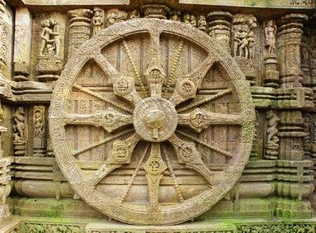
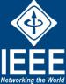
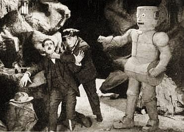
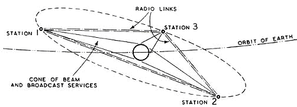

The beginning: Tools
|
Animals are known to use simple tools such as sticks and stones. Humans have been using them since before recorded history and possibly before we can technically be called human. No doubt hand made tools had a big impact on us, so it seems like a fitting place to start. Verbal language is also in this category as something that might have slowly evolved from a time before we were clearly human.
|
400,000 BC: Fire
|
The control of fire by early humans was a turning point in the cultural aspect of human evolution that allowed humans to cook food and obtain warmth and protection. Making fire also allowed the expansion of human activity into the dark and colder hours of the night, and provided protection from predators and insects.
It is not yet know exactly when it started but evidence of widespread control of fire by Homo erectus as far back as 400,000 years ago has wide scholarly support, but it probably goes back further.
|
40,000BC: Pressure Flaking
|
Hominids started using primitive stone tools millions of years ago. The earliest stone tools were little more than a fractured rock, but approximately 40,000 years ago, pressure flaking provided a way to make much finer work. Pressure flaking is a method of trimming the edge of a stone tool by removing small lithic flakes by pressing on the stone with a sharp instrument rather than striking it.
|
10,000BC: Agriculture
|
The Neolithic Revolution, better known as the Agricultural Revolution, was the wide-scale transition of many human cultures from a lifestyle of hunting and gathering to one of agriculture and settlement, allowing the ability to handle an increasingly larger population. These settled communities permitted humans to observe and experiment with plants to learn how they grew and developed. This new knowledge led to the domestication of plants.
Archaeological data indicates that the domestication of various types of plants and animals evolved in separate locations worldwide, starting in the geological epoch of the Holocene around 12,500 years ago. It was the world's first historically verifiable revolution in agriculture.
During the next millennia it would transform the small and mobile groups of hunter-gatherers that had hitherto dominated human pre-history into sedentary (non-nomadic) societies based in built-up villages and towns. These societies radically modified their natural environment by means of specialized food-crop cultivation (e.g., irrigation and deforestation) which allowed extensive surplus food production.
Argricultural tools including the plow and using animal power to pull the plow would all add greatly to mankinds technical progress and led to advances like the mill.
|
8040BC: Boat
 |
The Pesse canoe is believed to be the world's oldest known boat. Carbon dating indicates that the boat was constructed during the early mesolithic period near 8040 BCE. It is currently housed in the Drents Museum in Assen, Netherlands. It was formed from a single scotch pine log. Marks are present in the cavity, likely formed from flint or antler tools. The boat is also similar in construction to prehistoric canoes found in other countries.
Circumstantial evidence, such as the early settlement of Australia over 40,000 years ago, findings in Crete dated 130,000 years ago, and findings in Flores dated to 900,000 years ago, suggest that boats have been used since prehistoric times. A 7,000-year-old seagoing reed boat has been found in Kuwait. Boats were used between 4000 and 3000 BC in Sumer, ancient Egypt and in the Indian Ocean.
|
5000BC: Wheel
|  |
Precursors of wheels, known as "tournettes" or "slow wheels", were known in the Middle East by the 5th millennium BCE. One of the earliest examples was discovered at Tepe Pardis, Iran, and dated to 5200-4700 BCE. These were made of stone or clay and secured to the ground with a peg in the center, but required effort to turn.
True (freely-spinning) potter's wheels were apparently in use in Mesopotamia by 3500 BCE and possibly as early as 4000 BCE, and the oldest surviving example, which was found in Ur (modern day Iraq), dates to approximately 3100 BCE.
The first evidence of wheeled vehicles appears in the second half of the 4th millennium BCE, near-simultaneously in Mesopotamia (Sumerian civilization), the Northern Caucasus (Maykop culture) and Central Europe (Cucuteni-Trypillian culture), so the question of which culture originally invented the wheeled vehicle is still unsolved.
|
3500 BC: Cylinder Seal
|
One of the earliest known forms of printing, a cylinder seal is a small round cylinder, typically about one inch in length, engraved with written characters or figurative scenes or both, used in ancient times to roll an impression onto a two-dimensional surface, generally wet clay.
Cylinder seals were invented around 3500 BC in the Near East, at the contemporary sites of Susa in south-western Iran and Uruk in southern Mesopotamia. They are linked to the invention of the latter's cuneiform writing on clay tablets. They were used as an administrative tool, a form of signature, as well as jewelry and as magical amulets; later versions would employ notations with Mesopotamian cuneiform.
In later periods, they were used to notarize or attest to multiple impressions of clay documents. Graves and other sites housing precious items such as gold, silver, beads, and gemstones often included one or two cylinder seals, as honorific grave goods.
|
3350 BC: Kish Tablet
|
The Kish tablet is a limestone tablet found at Tell al-Uhaymir, Babil Governorate, Iraq, the site of the ancient Sumerian city of Kish. The Kish tablet is inscribed with proto-cuneiform signs. Some scholars believe it may be from the Uruk IV period (ca. 3350-3200 BC). Several thousands of proto-cuneiform documents dating to Uruk IV and III periods (ca. 3350-3000 BC) have been found in Uruk. The writing is still purely pictographic, and represents a transitional stage between proto-writing and the emergence of the partly syllabic writing of the cuneiform script proper.
|
3000 BC: Dust Abacus
|
Dust abacus is invented in Sumer, Mesopotamia. The Chinese abacus improved the idea by putting beads on wires in a box, which made it faster and portable, some say around 200BC, other say 2000BC, some say the Abacus comes from China, some say Mesopotamia.
|
2600 BC: Cruneiform

Written language in Sumer slowly evolves from the pictograms of the Kish Tablet, into a symbolic representation, written horizontally and read from left to right, just like the majority of western languages following it will.
Stages depicted above:
1. shows the pictogram as it was drawn around 3000 BC.
2. shows the rotated pictogram as written around 2800 BC.
3. shows the abstracted glyph in archaic monumental inscriptions, from c. 2600 BC.
4. is the sign as written in clay, contemporary to stage 3.
5. represents the late 3rd millennium.
6. represents Old Assyrian ductus of the early 2nd millennium, as adopted into Hittite.
7. is the simplified sign as written by Assyrian scribes in the early 1st millennium, and until the script's extinction.
1800 BC: Algorithms
|
Babylonian mathematician Abu Abdullah Muhammad ibn Musa Al-Khwarizmi develops algorithms to resolve numerical problems. He also invented algebra. |
600 BC: Electricity written about
|
Thales of Miletus is credited with observing that rubbing fur on various substances, such as amber, would cause an attraction between the two, which is now known to be caused by static electricity.
Thales is also recognised as having made a break from understanding the world and universe by mythological explanations to instead find explanations for the existence of natural things and phenomena by theories and hypothesis, ergo science. He is the first known individual to whom a mathematical discovery has been attributed.
|
539 BC: Cyrus Cylinder
|
The Cyrus Cylinder is one of the oldest artifacts of language printing. It is an ancient clay cylinder, now broken into several fragments, on which is written a declaration in Akkadian cuneiform script in the name of Persia's Achaemenid king Cyrus the Great. It dates from the 6th century BCE and was discovered in the ruins of Babylon in Mesopotamia (modern Iraq) in 1879. It is currently in the possession of the British Museum, which sponsored the expedition that discovered the cylinder. It was created and used as a foundation deposit following the Persian conquest of Babylon in 539 BC, when the Neo-Babylonian Empire was invaded by Cyrus and incorporated into his Persian Empire.
|
280BC: Watermill
|
The earliest written reference of a watermill is in the technical treatises Pneumatica and Parasceuastica of the Greek engineer Philo of Byzantium 280BC. The Greek geographer Strabon reports in his Geography a water-powered grain-mill to have existed near the palace of king Mithradates VI Eupator at Cabira, Asia Minor, before 71 BC. The Roman engineer Vitruvius has the first technical description of a watermill, dated to 40BC; the device is fitted with an undershot wheel and power is transmitted via a gearing mechanism. He also seems to indicate the existence of water-powered kneading machines. The Greek epigrammatist Antipater of Thessalonica tells of an advanced overshot wheel mill around 20 BC/10 AD. He praised for its use in grinding grain and the reduction of human labour.
|
142: Gunpowder
|
The very earliest possible reference to gunpowder appeared in 142 AD during the Eastern Han dynasty, when a man named Wei Boyang wrote about a substance with the properties of gunpowder, and described a mixture of three powders that would "fly and dance" violently in his Cantong qi, otherwise known as the "Book of the Kinship of Three", a Taoist text on the subject of alchemy.
The earliest record of a written formula for gunpowder appears in the 11th century Song dynasty text, Wujing Zongyao. This discovery led to the invention of fireworks and the earliest gunpowder weapons in China. In the centuries following the Chinese discovery, gunpowder weapons began appearing in the Muslim world, Europe, and India. The technology spread from China through the Middle East or Central Asia, and then into Europe.
Gunpowder, also known as black powder, is the earliest known chemical explosive. It is a mixture of sulfur, charcoal, and potassium nitrate (saltpeter). The sulfur and charcoal act as fuels, and the saltpeter is an oxidizer. Because of its burning properties and the amount of heat and gas volume that it generates, gunpowder has been widely used as a propellant in firearms and as a pyrotechnic composition in fireworks. Formulations used in blasting rock (such as in quarrying) are called blasting powder. Gunpowder is mainly used in older guns now because the propellants used today are too powerful and could break the already fragile barrels.
|
220: Woodblock Printing
|
The earliest woodblock printed fragments to survive are from China and are of silk printed with flowers in three colours from the Han Dynasty (220 CE). It is clear that woodblock printing developed in Asia several centuries before Europe. The Chinese were the first to use the process to print solid text, and equally that, much later, in Europe the printing of images on cloth developed into the printing of images on paper (woodcuts). It is also now established that the use in Europe of the same process to print substantial amounts of text together with images in block-books only came after the development of movable type, which was developed by Bi Sheng during the Northern Song Dynasty of China about 400 years later.
|
300: Industrial Watermill
|
Mills were commonly used for grinding grain into flour since at least as early as 280BC, but industrial uses as fulling and sawing marble are believed to begin around this time.
The 3rd-century AD Hierapolis water-powered stone sawmill is the earliest known machine to incorporate a crank and connecting rod mechanism. Further sawmills, also powered by crank and connecting rod mechanisms, are archaeologically attested for the 6th-century water-powered stone sawmills at Gerasa and Ephesus. Literary references to water-powered marble saws in what is now Germany can be found in Ausonius 4th-century poem Mosella. They also seem to be indicated about the same time by the Christian saint Gregory of Nyssa from Anatolia, demonstrating a diversified use of water-power in many parts of the Roman Empire.
Roman turbine mill at Chemtou, Tunisia. The tangential water inflow of the millrace made the horizontal wheel in the shaft turn like a true turbine, the earliest known.The earliest turbine mill was found in Chemtou and Testour, Roman North Africa, dating to the late 3rd or early 4th century AD. A possible water-powered furnace has been identified at Marseille, France.
The industrial uses of watermills in the Islamic world date back to the 7th century, while horizontal-wheeled and vertical-wheeled watermills were both in widespread use by the 9th century. A variety of industrial watermills were used in the Islamic world, including gristmills, hullers, sawmills, shipmills, stamp mills, steel mills, sugar mills, and tide mills. By the 11th century, every province throughout the Islamic world had these industrial watermills in operation, from al-Andalus and North Africa to the Middle East and Central Asia. Muslim and Middle Eastern Christian engineers also used crankshafts and water turbines, gears in watermills and water-raising machines, and dams as a source of water, used to provide additional power to watermills and water-raising machines. Fulling mills, and steel mills may have spread from Al-Andalus to Christian Spain in the 12th century. Industrial watermills were also employed in large factory complexes built in al-Andalus between the 11th and 13th centuries.
|
900: Compass
|
The magnetic compass was first invented as a device for divination as early as the Chinese Han Dynasty (since about 206 BC), and later adopted for navigation by the Song Dynasty Chinese around 900CE. The first usage of a compass recorded in Western Europe and Persia occurred around the early 13th century.
Modern compasses usually use a magnetized needle or dial inside a capsule completely filled with a liquid (mineral oil, kerosene, or ethyl alcohol is common). The liquid inside the capsule serves to damp the movement of the needle, reducing oscillation time and increasing stability. Key points on the compass, including the north end of the needle are often marked with phosphorescent, photoluminescent, or self-luminous materials to enable the compass to be read at night or in poor light. As the compass fill liquid is noncompressible under pressure, many ordinary liquid-filled compasses will operate accurately underwater to considerable depths.
|
1000: Modern Abacus
 |
Born Gerbert of Aurillac later to be christened Pope Sylvester II, invents a more efficient abacus.
The number illustrated on the left is 6302715408. The beads that are moved towards the dividing line represent the number. The each bead in the top row has a value of 5, each bead in the bottom row has a value of 1.
|
1040: Movable Type
|
Movable type is the system and technology of printing and typography that uses movable components to reproduce the elements of a document (usually individual letters or punctuation) usually on the medium of paper which was first invented in ancient China.
The world's first movable type printing press technology for printing paper books was made of ceramic porcelain china materials and invented in ancient China around A.D 1040 by the Han Chinese innovator Bi Sheng (990–1051) during the Northern Song Dynasty (960–1127). In 1377, currently the oldest extant movable metal print book, Jikji, was printed in Korea. The diffusion of both movable-type systems was, however, limited. They were expensive, and required a high amount of labor involved in manipulating the thousands of ceramic tablets or metal tablets, required for scripts based on the ancient Chinese writing script, which has hundreds of thousands of characters.
|
1132: Fire Arms
|
The invention of firearms, driven by gunpowder, was first developed in China and later spread to the Islamic world and Europe. Fire arms, guns and cannons are descendants of the fire lance, a gunpowder-filled tube attached to the end of a spear and used as a flamethrower in China. Shrapnel was sometimes placed in the barrel, so that it would fly out along with the flames.
The first documented battlefield use of fire lances took place in 1132 when Chen Gui used them to defend De'an from attack by the Jurchen Jin. In due course, the proportion of saltpeter in the propellant was increased to maximise its explosive power. To better withstand that explosive power, the paper and bamboo of which fire-lance barrels were originally made came to be replaced by metal. And to take full advantage of that power, the shrapnel came to be replaced by projectiles whose size and shape filled the barrel more closely. With this, we have the three basic features of the gun: a barrel made of metal, high-nitrate gunpowder, and a projectile which totally occludes the muzzle so that the powder charge exerts its full potential in propellant effect.
One theory of how gunpowder came to Europe is that it made its way along the Silk Road through the Middle East; another is that it was brought to Europe during the Mongol invasion in the first half of the 13th century.
The term gonne or gunne was applied to early hand-held firearms by the late 14th or early 15th century.
|
1206: Programmable Analog Computer
| The "castle clock", an astronomical clock invented by Al-Jazari in 1206, is considered to be the earliest programmable analog computer. It displayed the zodiac, the solar and lunar orbits, a crescent moon-shaped pointer travelling across a gateway causing automatic doors to open every hour,and five robotic musicians who played music when struck by levers operated by a camshaft attached to a water wheel. The length of day and night could be re-programmed to compensate for the changing lengths of day and night throughout the year. |
1440: Printing Press
|
The printing press was invented in the Holy Roman Empire by the German Johannes Gutenberg around 1440, based on existing screw presses. Gutenberg, a goldsmith by profession, developed a complete printing system, which perfected the printing process through all of its stages by adapting existing technologies to the printing purposes, as well as making groundbreaking inventions of his own. His newly devised hand mould made for the first time possible the precise and rapid creation of metal movable type in large quantities, a key element in the profitability of the whole printing enterprise. Gutenberg was the first to create his type pieces from an alloy of lead, tin, and antimony—and these materials remained standard for 550 years.
For alphabetic scripts, movable-type page setting was quicker than woodblock printing. The metal type pieces were more durable and the lettering was more uniform, leading to typography and fonts. The high quality and relatively low price of the Gutenberg Bible (1450) established the superiority of movable type in Europe and the use of printing presses spread rapidly. The printing press may be regarded as one of the key factors fostering the Renaissance and due to its effectiveness, its use spread around the globe.
The 19th-century invention of hot metal typesetting and its successors caused movable type to decline in the 20th century.
|
1502: Watch
 |
Peter Henlein, a craftsman from Nuremberg Germany, creates the first watch.
|
1515: Etch Printing
 |
Etching is traditionally the process of using strong acid or mordant to cut into the unprotected parts of a metal surface to create a design in intaglio (incised) in the metal. In modern manufacturing, other chemicals may be used on other types of material. As a method of printmaking, it is, along with engraving, the most important technique for old master prints, and remains in wide use today. In a number of modern variants such as microfabrication etching and photochemical milling it is a crucial technique in much modern technology, including circuit boards and integrated circuits.
In traditional pure etching, a metal (usually copper, zinc or steel) plate is covered with a waxy ground which is resistant to acid. The artist then scratches off the ground with a pointed etching needle where he or she wants a line to appear in the finished piece, so exposing the bare metal. The plate is then dipped in a bath of acid, or has acid washed over it. The acid "bites" into the metal (it dissolves part of the metal) where it is exposed, leaving behind lines sunk into the plate. The remaining ground is then cleaned off the plate. The plate is inked all over, and then the ink wiped off the surface, leaving only the ink in the etched lines.
The plate is then put through a high-pressure printing press together with a sheet of paper (often moistened to soften it). The paper picks up the ink from the etched lines, making a print. The process can be repeated many times; typically several hundred impressions (copies) could be printed before the plate shows much sign of wear. The work on the plate can also be added to by repeating the whole process; this creates an etching which exists in more than one state.
The process as applied to printmaking is believed to have been invented by Daniel Hopfer of Augsburg, Germany. Hopfer was a craftsman who decorated armour in this way, and applied the method to printmaking, using iron plates, the earliest known work remaining is from 1515.
|
1600: Electrical Engineering
|
William Gilbert coins the term electricity from the Greek word elecktra. He is regarded by some as the father of electrical engineering or electricity and magnetism. A unit of magnetomotive force, also known as magnetic potential, was named the Gilbert in his honour.
His primary scientific work was De Magnete, Magneticisque Corporibus, et de Magno Magnete Tellure (On the Magnet and Magnetic Bodies, and on the Great Magnet the Earth) published in 1600. In this work, he describes many of his experiments with his model Earth called the terrella. From these experiments, he concluded that the Earth was itself magnetic and that this was the reason compasses point north (previously, some believed that it was the pole star (Polaris) or a large magnetic island on the north pole that attracted the compass). He was the first to argue, correctly, that the centre of the Earth was iron, and he considered an important and related property of magnets was that they can be cut, each forming a new magnet with north and south poles.
|
1608: Telescope
|
The earliest recorded working telescopes were the refracting telescopes that appeared in the Netherlands in 1608. Their development is credited to three individuals: Hans Lippershey and Zacharias Janssen, who were spectacle makers in Middelburg, and Jacob Metius of Alkmaar.
Galileo heard about the Dutch telescope in June 1609, built his own within a month, and improved upon the design in the following year. In the same year, Galileo became the first person to point a telescope skyward in order to make telescopic observations of a celestial object.
|
1617: Napier's Bones
|
John Napier introduced a system called Napier's Bones, made from horn, bone or ivory the device allowed the capability of multiplying by adding numbers and dividing by subtracting.
|
1622: Slide Rule
|
|
William Oughtred develops the slide rule in England.
|
1624: Calculator-Clock
|
Wilhelm Schickard builds first four-function calculator-clock at the University of Heidelberg.
|
1642: Numerical Calculator
 |
Blaise Pascal builds the first numerical calculating machine in Paris.
|
1673: Mechanical Calculator
|
Gottfried Leibniz builds a mechanical calculating machine that multiplies, divides, adds and subtracts.
|
1745: Leyden Jar
|
A Leyden jar is a device that "stores" static electricity between two electrodes on the inside and outside of a glass jar. A Leyden jar typically consists of a glass jar with metal foil cemented to the inside and the outside surfaces, and a metal terminal projecting vertically through the jar lid to make contact with the inner foil. It was the original form of a capacitor (originally known as a "condenser").
It was invented independently by German cleric Ewald Georg von Kleist and by Dutch scientist Pieter van Musschenbroek of Leyden in 1745. The invention was named after the city. The Leyden jar was used to conduct many early experiments in electricity, and its discovery was of fundamental importance in the study of electrostatics. The Leyden jar was the first means of storing an electric charge which then could be discharged at the experimenter's will. Leyden jars are still used in education to demonstrate the principles of electrostatics.
|
1769: Steam Engine
|
Steam engines were the first engine type to see widespread use. They were first invented by Thomas Newcomen in 1705, but James Watt made big improvements to steam engines by 1769. Steam engines powered all early locomotives, steam boats and factories, and therefore acted as the foundation of the Industrial Revolution.
The steam engine is also interesting to me because you can see how it comes from ideas of the watermill for providing power, and evolves later into the internal combustion engine.
|
1780: Electricity
|
Benjamin Franklin discovers electricity. Franklin started exploring the phenomenon of electricity in 1746 when he heard of the Leyden jar. Franklin proposed that "vitreous" and "resinous" electricity were not different types of "electrical fluid" (as electricity was called then), but the same "fluid" under different pressures. He was the first to label them as positive and negative respectively, and he was the first to discover the principle of conservation of charge.
In 1748 he constructed a multiple plate capacitor, that he called an "electrical battery" (not to be confused with Volta's pile) by placing eleven panes of glass sandwiched between lead plates, suspended with silk cords and connected by wires. In 1750, he published a proposal for an experiment to prove that lightning is electricity by flying a kite in a storm that appeared capable of becoming a lightning storm.
On May 10, 1752, Thomas-Francois Dalibard of France conducted Franklin's experiment using a 40-foot-tall iron rod instead of a kite, and he extracted electrical sparks from a cloud. On June 15 Franklin may possibly have conducted his well known kite experiment in Philadelphia, successfully extracting sparks from a cloud. Franklin's experiment was not written up with credit until Joseph Priestley's 1767 History and Present Status of Electricity. Franklin was careful to stand on an insulator, keeping dry under a roof to avoid the danger of electric shock. Others, such as Prof. Georg Wilhelm Richmann in Russia, were indeed electrocuted during the months following Franklin's experiment.
|
1793: Cotton Gin
|
A cotton gin is a machine that quickly and easily separates cotton fibers from their seeds, allowing for much greater productivity than manual cotton separation. The fibers are then processed into various cotton goods such as linens, while any undamaged cotton is used largely for textiles including clothing. Seeds may be used to grow more cotton or to produce cottonseed oil.
Although simple handheld roller gins had been used in India and other countries since at earliest 500 AD, the first modern mechanical cotton gin was created by American inventor Eli Whitney in 1793 and patented in 1794. However, the Indian worm-gear roller gin, invented some time around the sixteenth century, has, according to Lakwete, remained virtually unchanged up to the present time.
Whitney's gin used a combination of a wire screen and small wire hooks to pull the cotton through, while brushes continuously removed the loose cotton lint to prevent jams. It revolutionized the cotton industry in the United States, but also led to the growth of slavery in the American South as the demand for cotton workers rapidly increased. The invention has thus been identified as an inadvertent contributing factor to the outbreak of the American Civil War. Modern automated cotton gins use multiple powered cleaning cylinders and saws, and offer far higher productivity than their hand-powered forebears.
|
1796: Lithography
|
Lithography is a method of printing originally based on oil and water. The printing is from a stone (lithographic limestone) or a metal plate with a smooth surface. It was invented in 1796 by German author and actor Alois Senefelder as a cheap method of publishing theatrical works. Lithography can be used to print text or artwork onto paper or other suitable material.
Lithography originally used an image drawn with oil, fat, or wax onto the surface of a smooth, level lithographic limestone plate. The stone was treated with a mixture of acid and gum arabic, etching the portions of the stone that were not protected by the grease-based image. When the stone was subsequently moistened, these etched areas retained water; an oil-based ink could then be applied and would be repelled by the water, sticking only to the original drawing. The ink would finally be transferred to a blank paper sheet, producing a printed page. This traditional technique is still used in some fine art printmaking applications.
In modern lithography, the image is made of a polymer coating applied to a flexible aluminum plate. The image can be printed directly from the plate (the orientation of the image is reversed), or it can be offset, by transferring the image onto a flexible sheet (rubber) for printing and publication.
Today, most types of high-volume books and magazines, especially when illustrated in colour, are printed with offset lithography, which has become the most common form of printing technology since the 1960s.
|
1800: Photography
|
Photography is the science, art, application and practice of creating durable images by recording light or other electromagnetic radiation, either electronically by means of an image sensor, or chemically by means of a light-sensitive material such as photographic film.
Typically, a lens is used to focus the light reflected or emitted from objects into a real image on the light-sensitive surface inside a camera during a timed exposure. With an electronic image sensor, this produces an electrical charge at each pixel, which is electronically processed and stored in a digital image file for subsequent display or processing. The result with photographic emulsion is an invisible latent image, which is later chemically "developed" into a visible image, either negative or positive depending on the purpose of the photographic material and the method of processing. A negative image on film is traditionally used to photographically create a positive image on a paper base, known as a print, either by using an enlarger or by contact printing.
|
Photography is employed in many fields of science, manufacturing (e.g., photolithography) and business, as well as its more direct uses for art, film and video production, recreational purposes, hobby, and mass communication.
The discovery of the camera obscura that provides an image of a scene dates back to ancient China. Leonardo da Vinci mentions natural camera obscura that are formed by dark caves on the edge of a sunlit valley. A hole in the cave wall will act as a pinhole camera and project a laterally reversed, upside down image on a piece of paper. So the birth of photography was primarily concerned with inventing means to capture and keep the image produced by the camera obscura.
Renaissance painters used the camera obscura which, in fact, gives the optical rendering in color that dominates Western Art. The camera obscura literally means "dark chamber" in Latin. It is a box with a hole in it which allows light to go through and create an image onto the piece of paper.
In 1800, British inventor Thomas Wedgwood made the first known attempt to capture the image in a camera obscura by means of a light-sensitive substance. He used paper or white leather treated with silver nitrate. Although he succeeded in capturing the shadows of objects placed on the surface in direct sunlight, and even made shadow copies of paintings on glass, it was reported in 1802 that "the images formed by means of a camera obscura have been found too faint to produce, in any moderate time, an effect upon the nitrate of silver." The shadow images eventually darkened all over.
The first permanent photoetching was an image produced in 1822 by the French inventor Nicephore Niepce, but it was destroyed in a later attempt to make prints from it. Niepce was successful again in 1825. In 1826 or 1827, he made the View from the Window at Le Gras, the earliest surviving photograph from nature.
1801: Punch Cards
| |
Joseph-Marie Jacquard invents the punch card to program a loom, which in turn played an important role in the development of other programmable machines, such as an early version of digital compiler used by IBM to develop the modern day computer.
The basic purpose of any loom is to hold the warp threads under tension to facilitate the interweaving of the weft threads. The Jacquard loom is a power loom that simplifies the process of manufacturing textiles with complex patterns. The loom was controlled by a "chain of cards", a number of punched cards, laced together into a continuous sequence. Multiple rows of holes were punched on each card, with one complete card corresponding to one row of the design. Chains allowed sequences of any length to be constructed, not limited by the size of a card.
|
1820: Electromagnetism
|
Hans Christian Oersted, the Danish physicist and chemist, unites the separate sciences of electricity and magnetism. He develops an experiment in which he notices a compass needle is deflected from magnetic north when an electric current from the battery he was using was switched on and off, convincing him that magnetic fields radiate from all sides of a live wire just as light and heat do, confirming a direct relationship between electricity and magnetism.
He also observes that the movement of the compass-needle to one side or the other depends upon the direction of the current. Following intensive investigations, he published his findings, proving that a changing electric current produces a magnetic field as it flows through a wire. The oersted unit of magnetic induction is named for his contributions.
|
1820: Calculator
|
Thomas de Colmar creates the first reliable, useful and commercially successful calculating machine.
|
1822: Difference Engine
|
In England Charles Babbage designs a Difference Engine to calculate logarithms, but the machine is never built.
|
1827: Ohm's Law
|
George Simon Ohm introduces Ohm's law in the book Die galvanische Kette, mathematisch bearbeitet.
|
1831: Electric Generator
|
Michael Faraday began experiments leading to his discovery of the law of electromagnetic induction. His breakthrough came when he wrapped two insulated coils of wire around a massive iron ring, bolted to a chair, and found that upon passing a current through one coil, a momentary electric current was induced in the other coil.
He then found that if he moved a magnet through a loop of wire, or vice versa, an electric current also flowed in the wire. He then used this principle to construct the electric dynamo, the first electric power generator.
|
1831: Electric Telegraph
|
Joseph Henry of Princeton invents the first working telegraph. The electrical telegraph, or more commonly just telegraph, superseded optical semaphore telegraph systems, such as Claude Chappe's towers designed for communication among the French military, and Friedrich Clemens Gerke for the Prussian military, thus becoming the first form of electrical telecommunications.
An electrical telegraph was independently developed and patented in the United States in 1837 by Samuel Morse.
|
1833: Analytical Machine
|
Charles Babbage designs the Analytical Machine that follows instructions from punched-cards. It is the first general purpose computer.
|
1837: Morse Code & Electric Relay
|
Samuel Morse together with his assistant, Alfred Vail, invents a code (later called Morse code) that used patterns of short and long signals to represent the English alphabet and digits.
Morse encountered the problem of getting a telegraphic signal to carry over more than a few hundred yards of wire. His breakthrough came from the insights of Professor Leonard Gale, who taught chemistry at New York University (he was a personal friend of Joseph Henry). With Gale's help, Morse introduced extra circuits or relays at frequent intervals, and was soon able to send a message through ten miles (16 km) of wire.
There is some debate if Morse or Joseph Henry careted the first relay, however this relay was the first patent, included together with the original 1840 telegraph patent. The mechanism described acted as a digital amplifier, repeating the telegraph signal, and thus allowing signals to be propagated as far as desired. This overcame the problem of limited range of earlier telegraphy schemes.
|
1842: First Program
|
Lady Ada Byron, Countess of Lovelace and daughter of Lord Byron, the poet, documents Babbage's work and writes programs for Babbage.
|
1842: Refrigeration
|
In 1842, John Gorrie created a system capable of refrigerating water to produce ice. Although it was a commercial failure, it inspired scientists and inventors around the world.
France's Ferdinand Carre was one of the inspired and he created an ice producing system that was simpler and smaller than that of Gorrie. During the Civil War, cities such as New Orleans could no longer get ice from New England via the coastal ice trade. Carre's refrigeration system became the solution to New Orleans ice problems and by 1865 the city had three of Carre's machines.
In 1867, in San Antonio, Texas, a French immigrant named Andrew Muhl built an ice-making machine to help service the expanding beef industry before moving it to Waco in 1871. In 1873, the patent for this machine was contracted by the Columbus Iron Works, a company acquired by the W. C. Bradley Co., which went on to produce the first commercial ice-makers in the US.
It took many years to get the concept of refrigeration to the point where it was sidely useful. The idea of refrigeration goes back to William Cullen who designed a small refrigerating machine in 1755. Cullen used a pump to create a partial vacuum over a container of diethyl ether, which then boiled, absorbing heat from the surrounding air. The experiment even created a small amount of ice. It had no practical application at that time, but it inspired Benjamin Franklin to reproduce and properly record the experiment.
In 1758, Benjamin Franklin and John Hadley, professor of chemistry, collaborated on a project investigating the principle of evaporation as a means to rapidly cool an object at Cambridge University, England.
They confirmed that the evaporation of highly volatile liquids, such as alcohol and ether, could be used to drive down the temperature of an object past the freezing point of water. They conducted their experiment with the bulb of a mercury thermometer as their object and with a bellows used to "quicken" the evaporation; they lowered the temperature of the thermometer bulb down to 7F (-14 C), while the ambient temperature was 65F (18 C). They noted that soon after they passed the freezing point of water (32F), a thin film of ice formed on the surface of the thermometer's bulb and that the ice mass was about a quarter inch thick.
Franklin wrote, "From this experiment, one may see the possibility of freezing a man to death on a warm summer's day".
|
1846: The Associated Press
|
The Associated Press (AP) is an American multinational nonprofit news agency headquartered in New York City that operates as a cooperative, unincorporated association. The AP is owned by its contributing newspapers and radio and television stations in the United States, all of which contribute stories to the AP and use material written by its staff journalists. Most of the AP staff are union members and are represented by the Newspaper Guild, which operates under the Communications Workers of America, which operates under the AFL–CIO.
Associated Press is a not-for-profit news cooperative formed in May 1846 by five daily newspapers in New York City to share the cost of transmitting news of the Mexican–American War by boat, horse express and telegraph. The venture was organized by Moses Yale Beach (1800–68), second publisher of the The Sun, joined by the New York Herald, the New York Courier and Enquirer, The Journal of Commerce, the New York Evening Express, the Chicago Tribune, and the New York Times which became a member shortly after its founding in September 1851.
|
1851: Western Union
|
Founded 1851, the first transcontinental telegraph line in 1861, the first stock ticker in 1866, the first money transfer service in 1871, the first charge card for consumers in 1914, teletypewriters in 1923, the first fax service in 1935, the first intercity microwave communications in 1943, the first American telecommunications corporation to maintain its own fleet of geosynchronous communication satellites in 1974.
In the 1970s, WUI installed and leased to the U.S. Department of Defense (DOD) dedicated 50 Kbps high-speed telecommunications facilities between the continental U.S. and Hawaii, Germany and the United Kingdom to provide a test bed for the DOD's Advanced Research Projects Agency (ARPA). This test bed provided ARPA with a proof of concept for the technology of packet switching which later became the Internet.
Western Union was a prime contractor in the Automatic Digital Network (AUTODIN) program. AUTODIN, a military application for communication, was first developed in the 1960s and became the precursor to the modern Internet in the 1990s. The Defense Message System (DMS) replaced AUTODIN in 2000.
|
1852: Photolithography
|
Photolithography, also termed optical lithography or UV lithography, is a process used in microfabrication to pattern parts of a thin film or the bulk of a substrate. It uses light to transfer a geometric pattern from a photomask to a light-sensitive chemical "photoresist", or simply "resist," on the substrate. A series of chemical treatments then either engraves the exposure pattern into, or enables deposition of a new material in the desired pattern upon, the material underneath the photo resist. For example, in complex integrated circuits, a modern CMOS wafer will go through the photolithographic cycle up to 50 times.
Photolithography shares some fundamental principles with photography in that the pattern in the etching resist is created by exposing it to light, either directly (without using a mask) or with a projected image using an optical mask. This procedure is comparable to a high precision version of the method used to make printed circuit boards. Subsequent stages in the process have more in common with etching than with lithographic printing. It is used because it can create extremely small patterns (down to a few tens of nanometers in size), it affords exact control over the shape and size of the objects it creates, and because it can create patterns over an entire surface cost-effectively. Its main disadvantages are that it requires a flat substrate to start with, it is not very effective at creating shapes that are not flat, and it can require extremely clean operating conditions.
Henry Talbot used the first halftone screen used for the reproduction of photographs around 1852. About 33 years later, Frederick Ives, an American, designed the first practical halftone screen that consisted of two exposed glass negatives with line scribed on each of them. They were then cemented together so that the scribed lines would cross at right angles. This halftone process allowed the reproduction of original photographs without the need to draw or engrave them onto a printing plate.
Alphonse Poitevin (pictured left) experimented with the asphaltum process and eventually substituted photosensitive dichromated albumen for the bitumen, which he was able to wash in water to produce a planographic, or smooth, surface for printing. This produced a cleaner and more detailed image. Poitevin’s 1855 invention is the basis for the photolithographic transfer process we use today.
|
1854: Boolean Algebra
|
George Boole publishes The Mathematical Analysis of Logic using the binary system now known as Boolean algebra.
|
1855: Mechanical Computer
|
George and Edvard Scheutz of Stockholm build the first practical mechanical computer based on Babbages work.
|
1866: Trans-Alantic Cable
|
The first successful Trans-Atlantic cable is laid from Ireland to Newfoundland.
|
1867: Radio Waves
 |
In 1865 James Clerk Maxwell publishes his landmark paper "A Dynamical Theory of the Electromagnetic Field", in which he demonstrated that electric and magnetic forces are two complementary aspects of electromagnetism. He shows that the associated complementary electric and magnetic fields of electromagnetism travel through space, in the form of waves, at a constant velocity of 3.0 × 108 m/s.
In 1873 Maxwell publishes "A Treatise on Electricity and Magnetism" which states that light is a form of electromagnetic radiation and that waves of oscillating electric and magnetic fields travel through empty space at a speed that could be predicted from simple electrical experiments. Using available data, he obtains a velocity of 310,740,000 m/s and states "This velocity is so nearly that of light, that it seems we have strong reason to conclude that light itself (including radiant heat, and other radiations if any) is an electromagnetic disturbance in the form of waves propagated through the electromagnetic field according to electromagnetic laws.
Radio waves were first predicted by mathematical work done in 1867 by Scottish mathematical physicist James Clerk Maxwell. Maxwell noticed wavelike properties of light and similarities in electrical and magnetic observations. His mathematical theory, now called Maxwell's equations, described light waves and radio waves as waves of electromagnetism that travel in space, radiated by a charged particle as it undergoes acceleration.
In 1887, Heinrich Hertz demonstrated the reality of Maxwell's electromagnetic waves by experimentally generating radio waves in his laboratory, showing that they exhibited the same wave properties as light: standing waves, refraction, diffraction, and polarization. Radio waves were first used for communication in the mid 1890s by Guglielmo Marconi, who developed the first practical radio transmitters and receivers.
|
1868: Typewriter & QWERTY keyboard
|
Christopher Sholes invents the first commercially sucessful typewriter in the United States utilizing the QWERTY keyboard layout in an effort to reduce the frequency of typebar jams. Why this is still the default English keyboard used today is a mystery.
|
1875: Toshiba
 |
Tanaka Seizo-sho is established in Japan and later merges with another company called shibaura Seisaku-sho to form Tokyo Shibarura Denki. Later this company's name is shortened to the company that we know today, Toshiba.
Its diversified products and services include information technology and communications equipment and systems, electronic components and materials, power systems, industrial and social infrastructure systems, consumer electronics, household appliances, medical equipment, office equipment, lighting and logistics.
In March 2015, Toshiba announced the development of the first 48-layer, three-dimensional flash memory. The new flash memory is based on a vertical stacking technology that Toshiba calls BiCS (Bit Cost Scaling), stores two bits of data per transistor and can store 128Gbits (16GB) per chip.
As of March 2016, Toshiba is starting construction on a cutting-edge new semiconductor plant in Japan that will mass-produce chips based on the ultra-dense flash variant. Toshiba expects to spend approximately $3.2 billion on the project through May 2019.
|
1876: Microphone
|
German inventor Johann Philipp Reis designed an early sound transmitter that used a metallic strip attached to a vibrating membrane that would produce intermittent current. Better results were achieved with the "liquid transmitter" design in Scottish-American Alexander Graham Bell's telephone of 1876 – the diaphragm was attached to a conductive rod in an acid solution. These systems, however, gave a very poor sound quality.
The first microphone that enabled proper voice telephony was the (loose-contact) carbon microphone. This was independently developed by David Edward Hughes in England and Emile Berliner and Thomas Edison in the US. Although Edison was awarded the first patent (after a long legal dispute) in mid-1877, Hughes had demonstrated his working device in front of many witnesses some years earlier, and most historians credit him with its invention.The carbon microphone is the direct prototype of today's microphones and was critical in the development of telephony, broadcasting and the recording industries. Thomas Edison refined the carbon microphone into his carbon-button transmitter of 1886. This microphone was employed at the first ever radio broadcast, a performance at the New York Metropolitan Opera House in 1910.
In 1916, C. Wente of Bell Labs developed the next breakthrough with the first condenser microphone.
In 1923, the first practical moving coil microphone was built. "The Marconi Skykes" or "magnetophon", developed by Captain H. J. Round, was the standard for BBC studios in London. This was improved in 1930 by Alan Blumlein and Herbert Holman who released the HB1A and was the best standard of the day.
Also in 1923, the ribbon microphone was introduced, another electromagnetic type, believed to have been developed by Harry F. Olson, who essentially reverse-engineered a ribbon speaker. Over the years these microphones were developed by several companies, most notably RCA that made large advancements in pattern control, to give the microphone directionality. With television and film technology booming there was demand for high fidelity microphones and greater directionality. Electro-Voice responded with their Academy Award-winning shotgun microphone in 1963.
During the second half of 20th century development advanced quickly with the Shure Brothers bringing out the SM58 and SM57. Digital was pioneered by Milab in 1999 with the DM-1001. The latest research developments include the use of fibre optics, lasers and interferometers.
|
1876: Telephone
 |
Invented by Alexander Graham Bell, the essential elements of a telephone are a microphone (transmitter) to speak into and an earphone (receiver) which reproduces the voice in a distant location. In addition, most telephones contain a ringer which produces a sound to announce an incoming telephone call, and a dial or keypad used to enter a telephone number when initiating a call to another telephone.
Until approximately the 1970s most telephones used a rotary dial, which was superseded by the modern DTMF push-button dial, first introduced to the public by AT&T in 1963. The receiver and transmitter are usually built into a handset which is held up to the ear and mouth during conversation. The dial may be located either on the handset, or on a base unit to which the handset is connected. The transmitter converts the sound waves to electrical signals which are sent through the telephone network to the receiving phone. The receiving telephone converts the signals into audible sound in the receiver, or sometimes a loudspeaker. Telephones permit duplex communication, meaning they allow the people on both ends to talk simultaneously.
The first telephones were directly connected to each other from one customer's office or residence to another customer's location. Being impractical beyond just a few customers, these systems were quickly replaced by manually operated centrally located switchboards. This gave rise to landline telephone service in which each telephone is connected by a pair of dedicated wires to a local central office switching system, which developed into fully automated systems starting in the early 1900s.
|
1876: Internal Combustion Engine
|
The Otto engine was a stationary single-cylinder engine designed by Nikolaus Otto. In the action of the engine, the stroke is an upward or downward movement of a piston in a cylinder. Used later in an adapted form as an automobile engine, four strokes are involved:
(1) downward intake stroke—coal-gas and air enter the piston chamber,
(2) upward compression stroke—the piston compresses the mixture,
(3) downward power stroke—ignites the fuel mixture by flame and later electric spark,
(4) upward exhaust stroke—releases exhaust gas from the piston chamber.
|
1877: Bell AT&T
 |
Bell Telephone was renamed American Telephone and Telegraph Company in 1885. AT&T not only created the first public communication network, they created Bell Labs in 1925.
In 1982, U.S. regulators broke up the AT&T monopoly, requiring AT&T to divest its regional subsidiaries and turning them each into individual companies. These new companies were known as Regional Bell Operating Companies, or more informally, Baby Bells. AT&T continued to operate long distance services, but as a result of this breakup, faced competition from new competitors such as MCI and Sprint.
Southwestern Bell was one of the companies created by the breakup of AT&T. The company soon started a series of acquisitions. In the later half of the 1990s, the company acquired several other telecommunications companies, during this time, the company changed its name to SBC Communications. By 1998, the company was in the top 15 of the Fortune 500, and by 1999 the company was part of the Dow Jones Industrial Average (lasting through 2015).
In 2005, SBC purchased AT&T for $16 billion. After this purchase, SBC adopted the AT&T name and brand. The original 1885 AT&T still exists as the long-distance phone subsidiary of this company. Although the current AT&T as a corporate structure has only existed since 1983, the company has adopted the original AT&T's history as its own.
|
1882: Power Distribution
|
Thomas Edison switches on the world's first electrical power distribution system, providing 110 volts direct current (DC) to 59 customers at Pearl Street Station, the first central power plant in the United States. It was located at 255-257 Pearl Street in Manhattan on a site measuring 50 by 100 feet, just south of Fulton Street and fired by coal.
It began with one direct current generator, and it started generating electricity on September 4, 1882, serving an initial load of 400 lamps at 82 customers. By 1884, Pearl Street Station was serving 508 customers with 10,164 lamps. The station was built by the Edison Illuminating Company.
|
1882: Dow Jones

Dow Jones
|
The company was founded in 1882 by three reporters: Charles Dow, Edward Jones, and Charles Bergstresser.
In 1884, Charles Dow composed his first stock average, which contained nine railroads and two industrial companies that appeared in the Customer's Afternoon Letter, a daily two-page financial news bulletin which was the precursor to The Wall Street Journal.
On January 2, 1886, the number of stocks represented in what we now call the Dow Jones Transportation Average dropped from 14 to 12, as the Central Pacific Railroad and Central Railroad of New Jersey were dropped from that index. Though comprising the same number of stocks, this index contained only one of the original twelve industrials that would eventually form Dow's most famous index.
Dow Jones was acquired in 1902 by Clarence Barron, the leading financial journalist of the day, after the death of co-founder Charles Dow. Upon Barron's death in 1928, control of the company passed to his stepdaughters Jane and Martha Bancroft. The company was led by the Bancroft family, which effectively controlled 64% of all voting stock, until 2007 when an extended takeover battle saw News Corporation acquire the business.
The company became a subsidiary of News Corporation after an extended takeover bid during 2007. It was reported on August 1, 2007 that the bid had been successful after an extended period of uncertainty about shareholder agreement. The transaction was completed on December 13, 2007. It was worth US$5 billion or $60 a share, giving News Corp control of The Wall Street Journal and ending the Bancroft family's 105 years of ownership.
In 2010, the company sold 90% of Dow Jones Indexes to the CME Group, including the Dow Jones Industrial Average.
|
1883: Edison Effect
|
American Thomas Edison discovers the Edison effect, in which an electric current flows through a vacuum. This discovery leads to numerous developments such as light bulbs, vacuum tubes, cathode-ray tubes, diodes and triodes to name a few.
The earliest vacuum tubes evolved from incandescent light bulbs, containing a filament sealed in an evacuated glass envelope. When hot, the filament releases electrons into the vacuum, a process called thermionic emission, originally known as the "Edison Effect". A second electrode, the anode or plate, will attract those electrons if it is at a more positive voltage. The result is a net flow of electrons from the filament to plate. However, electrons cannot flow in the reverse direction because the plate is not heated and does not emit electrons.
The filament (cathode) has a dual function: it emits electrons when heated; and, together with the plate, it creates an electric field due to the potential difference between them. Such a tube with only two electrodes is termed a diode, and is used for rectification. Since current can only pass in one direction, such a diode (or rectifier) will convert alternating current (AC) to pulsating DC. Diodes can therefore be used in a DC power supply, as a demodulator of amplitude modulated (AM) radio signals and for similar functions.
|
1884: AIEE is founded.
|  |
The American Institute of Electrical Engineers (AIEE) was a United States based organization of electrical engineers that existed from 1884 through 1962. On January 1, 1963 it merged with the Institute of Radio Engineers (IRE) to form the Institute of Electrical and Electronics Engineers (IEEE).
|
1884: NCR
 |
The National Cash Register (NCR) Corporation is an American computer hardware, software and electronics company that makes self-service kiosks, point-of-sale terminals, automated teller machines, check processing systems, barcode scanners, and business consumables. They also provide IT maintenance support services. NCR had been based in Dayton, Ohio, starting in 1884, but in June 2009, the company sold most of the Dayton properties and moved its headquarters to Metro Atlanta. Currently the headquarters are in unincorporated Gwinnett County, Georgia, near Duluth, and Alpharetta, Georgia. With a future headquarters planned for the end of 2016 at Technology Square (Adjacent to Georgia Institute of Technology) located in Atlanta, Georgia.
NCR was founded in 1884 and acquired by AT&T in 1991. A restructuring of AT&T in 1996 led to NCR's re-establishment on 1 January 1997 as a separate company, and involved the spin-off of Lucent Technologies from AT&T. NCR is the only AT&T spin-off company that has retained its original name—all the others have either been purchased or renamed following subsequent mergers.
The company began as the National Manufacturing Company of Dayton, Ohio, which was established to manufacture and sell the first mechanical cash register, invented in 1879 by Drew Kacer. In 1884, the company and patents were bought by John Henry Patterson and his brother Frank Jefferson Patterson and the firm was renamed the National Cash Register Company. Patterson formed NCR into one of the first modern American companies, introducing new, aggressive sales methods and business techniques. He established the first sales training school in 1893, and introduced a comprehensive social welfare program for his factory workers.
Other significant figures in the early history of the company were Charles F. Kettering, Thomas J. Watson, Sr. and Edward A. Deeds. Deeds and Kettering went on to found Dayton Engineering Laboratories Company which later became Delco Products Division of General Motors. Kettering designed the first cash register powered by an electric motor in 1906. Within a few years he developed the Class 1000 register which was in production for 40 years, and the O.K. Telephone Credit Authorization system for verifying credit in department stores.
In 1953, chemists Barrett K. Green and Lowell Schleicher of NCR in Dayton submitted a patent "Pressure responsive record materials" for a carbonless copy paper. This became US Patent 2,730,457 and was commercialized as "NCR Paper."
In February 1953, the company acquired the Computer Research Corporation (CRC), after which it created a specialized electronics division. In 1956, NCR introduced its first electronic device, the Class 29 Post-Tronic, a bank machine using magnetic stripe technology. With GE the company manufactured its first transistor-based computer in 1957, the NCR 304. Also in the 1950s NCR introduced MICR (magnetic ink character recognition) and the NCR 3100 accounting machines.
In 1962, NCR introduced the NCR-315 Electronic Data Processing System which included the CRAM storage device, the first automated mass storage alternative to magnetic tape libraries accessed manually by computer operators. The NCR 390 and 500 computers were also offered to customers who did not need the full power of the 315. The NCR 390 accepted four types of input: magnetic ledger cards, punched cards, punched tape, and keyboard entry, with a tape read speed of 400 characters a second. The company's first all-integrated circuit computer was the Century 100 of 1968. The Century 200 was added in 1970. The line was extended through the Century 300. The Century series was followed by the Criterion series in 1976, NCR's first virtual machine system.
During this period, NCR also produced the 605 minicomputer for in-house use. It was the compute engine for the 399 and 499 accounting machines, several generations of in-store and in-bank controllers, and the 82xx/90xx IMOS COBOL systems. The 605 also powered peripheral controllers, including the 658 disk subsystem and the 721 communications processor. By 1986, the number of mainframe makers had dropped from 8 (IBM and the "seven dwarfs") to 6 (IBM and the "BUNCH") to 4: IBM, Unisys, NCR, and Control Data Corporation.
As of 2016, NCR currently commands over a third of the entire ATM market.
|
1886: Westinghouse
|
The Westinghouse Electric Corporation was an American manufacturing company. It was founded on January 8, 1886, as Westinghouse Electric Company and later renamed Westinghouse Electric Corporation by inventor and entrepreneur George Westinghouse (1846-1914). George Westinghouse had previously founded the Westinghouse Air Brake Company. The corporation purchased CBS broadcasting company in 1995 and became CBS Corporation in 1997.
Westinghouse Electric was founded by George Westinghouse in Pittsburgh, Pennsylvania in 1886. The firm became active in developing electric infrastructure throughout the United States. The company's largest factories were located in East Pittsburgh Pennsylvania, and Lester, PA[1] and in Hamilton, Ontario, where they made turbines, generators, motors, and switch gear for generation, transmission, and use of electricity.
Early on Westinghouse was a rival to Thomas Edison's electric company. In 1892 Edison was merged with Westinghouse's chief AC rival, the Thomson-Houston Electric Company, making even bigger competitor, General Electric. Westinghouse changed its name to Westinghouse Electric Corporation in 1945.
Westinghouse purchased CBS in 1995 and became CBS Corporation in 1997. In 1998, CBS established a brand licensing subsidiary Westinghouse Licensing Corporation (Westinghouse Electric Corporation). In 1997/1998 the Power Generation Business Unit, headquartered in Orlando, FL, was sold to Siemens AG, of Germany. A year later, CBS sold all of its nuclear power businesses to British Nuclear Fuels Limited (BNFL). Soon after, BNFL gained license rights on the Westinghouse trademarks and they used those to reorganize their acquired assets as Westinghouse Electric Company. That company was sold to Toshiba in 2007.
As a result of its participation in the US government's military program for nuclear energy applications (e.g. The Nuclear Navy) Westinghouse was instrumental in the development and commercialization of nuclear energy systems for electric power generation. This business currently operates as the Westinghouse Electric Company, and is owned by Toshiba of Japan. Electricite de France (EDF) a major global player in the nuclear power business, was a long-time licensee of the Westinghouse nuclear technology.
Additional major industrial products in the widespread Westinghouse portfolio included electric motors of all sizes, elevators and escalators, controls and lighting. The Large Motor Division, once headquartered in Buffalo, NY, entered a joint venture with Taiwan Electric Co. (TECO) in the 1970s and today operates as TECO-Westinghouse.
The Westinghouse Transportation Division supplied the equipment and controls for the San Francisco Bay Area Rapid Transport (BART) and the Washington, DC METRO, as well as Automated People Movers at several large US airports, including Dallas-Ft. Worth and Orlando. That business was sold to AEG of Germany (1988), which in turn sold it to a joint venture of ABB and Daimler Benz Transportation, Inc (named ADTRANZ) in 1996. Ultimately, the business was acquired by Bombardier of Canada in 2001 and is still headquartered in Pittsburgh, PA.
Westinghouse was also a leader in the design and manufacturing of household electrical products including radios, televisions, and other audio/video equipment, and both small and large electric appliances of all kinds, from hair dryers and electric irons to clothes washers and dryers, refrigerators and air conditioning units. For many years Westinghouse was a familiar household name and favored brand. After more than 50 years, and after playing a strong No. 2 to rival General Electric for most of that time, Westinghouse decided to exit the appliance business in the mid- 1970s. White-Westinghouse was formed when White Consolidated acquired the Westinghouse appliance unit in 1975.
Westinghouse was one of the original corporate sponsors and exhibitors at Walt Disney World's EPCOT attraction in Orlando, FL.
|
1886: Adding Machine
|
William Burroughs develops the first commercially successful mechanical adding machine and forms The Burroughs Corporation. The Burroughs Corporation was a major American manufacturer of business equipment. The company was founded in 1886 as the American Arithmometer Company, and after the 1986 merger with Sperry Univac was renamed Unisys. The company's history paralleled many of the major developments in computing. At its start it produced mechanical adding machines, and later moved into programmable ledgers and then computers. It was one of the largest producers of mainframe computers in the world, also producing related equipment including typewriters and printers.
Burroughs was one of the nine major United States computer companies in the 1960s, with IBM the largest, Honeywell, NCR Corporation, Control Data Corporation (CDC), General Electric (GE), Digital Equipment Corporation (DEC), RCA and Sperry Rand (UNIVAC line). In terms of sales, Burroughs was always a distant second to IBM. In fact, IBM's market share was so much larger than all of the others that this group was often referred to as "IBM and the Seven Dwarfs." By 1972 when GE and RCA were no longer in the mainframe business, the remaining five companies behind IBM became known as the BUNCH, an acronym based on their initials.
|
1886: Automobile
|
The year 1886 is regarded as the birth year of the modern car. In that year, German inventor Karl Benz built the Benz Patent-Motorwagen.
The Benz Patent-Motorwagen was a three-wheeled automobile with a rear-mounted engine. The vehicle contained many new inventions. It was constructed of steel tubing with woodwork panels. The steel-spoked wheels and solid rubber tires were Benz's own design. Steering was by way of a toothed rack that pivoted the unsprung front wheel. Fully elliptic springs were used at the back along with a live axle and chain drive on both sides. A simple belt system served as a single-speed transmission, varying torque between an open disc and drive disc.
The first Motorwagen used the Benz 954 cc single-cylinder four-stroke engine with trembler coil ignition. This new engine produced 500 watts (2⁄3 hp) at 250 rpm in the Patent-Motorwagen, although later tests by the University of Mannheim showed it to be capable of 670 W (0.9 hp) at 400 rpm. It was an extremely light engine for the time, weighing about 220 lb.
|
1888: Alternating Current
|
Nikola Tesla, the genius known as the wild man of electronics, was possibly the greatest technical mind of the human race. Tesla invented the rotating field motor, an alternating-current generator that provides your light and electricity, the transformer through which it is sent, and even the high voltage coil of your picture-tube. The Tesla Coil, in fact, is used in radios, television sets, and a wide-range of other electronic equipment, since 1891. Tesla designed an oscillator that generated half a million volts, the radio, vacuum tubes, X-rays, hydroelectric generators, the loudspeaker, fluorescent lights, radar, the rotary engine, generating microwaves, The basis for diathermy (deep heating tissues through the use of high frequency electrical current), and remote radio control. Among his notes were ideas for Missiles, Particle beam weaponry, Satellites, Nuclear fission, and Robots.
|
1888: Tabulating Machine Company
|
1888, a patent is issued for Hollerith tabulating machine, an electromechanical machine using perforated cards for use in the U.S. census, which starts the Tabulating Machine Company. The company later becomes IBM. |
1889: Wall Street Journal
|
The Wall Street Journal is a business-focused, English-language international newspaper based in New York City. The Journal, along with its Asian and European editions, is published six days a week by Dow Jones & Company, a division of News Corp. The newspaper is published in the broadsheet format and online.
The Wall Street Journal is the largest newspaper in the United States by circulation. According to the Alliance for Audited Media, the Journal had a circulation of about 2.4 million copies (including nearly 900,000 digital subscriptions) as of March 2013, compared with USA Today's 1.7 million.
The newspaper has won 39 Pulitzer Prizes through 2015 and derives its name from Wall Street in the heart of the Financial District of Lower Manhattan. The Journal has been printed continuously since its inception on July 8, 1889, by Charles Dow, Edward Jones, and Charles Bergstresser.
|
1892: General Electric
|
General Electric (GE) is an American multinational conglomerate corporation incorporated in New York, and headquartered in Boston, Massachusetts. As of 2016, the company operates through the following segments: Power & Water, Oil and Gas, Aviation, Healthcare, Transportation and Capital which cater to the needs of Financial services, Medical devices, Life Sciences, Pharmaceutical, Automotive, Software Development and Engineering industries.
In 2011, GE ranked among the Fortune 500 as the 68th-largest firm in the U.S. by gross revenue, and the 14th most profitable. As of 2012, the company was listed the fourth-largest in the world among the Forbes Global 2000, further metrics being taken into account. The Nobel Prize has twice been awarded to employees of General Electric: Irving Langmuir in 1932 and Ivar Giaever in 1973.
In 1896, General Electric was one of the original 12 companies listed on the newly formed Dow Jones Industrial Average. After 120 years, it is the only one of the original companies still listed on the Dow index, although it has not been on the index continuously.
With IBM (the largest), Burroughs, NCR, Control Data Corporation, Honeywell, RCA and UNIVAC, GE was one of the eight major computer companies of the 1960s.
In 1962, GE started developing its GECOS (later renamed GCOS) operating system, originally for batch processing, but later extended to timesharing and transaction processing. Versions of GCOS are in use today.
From 1964 to 1969, GE and Bell Laboratories (which soon dropped out) joined with MIT to develop the Multics operating system on the GE 645 mainframe computer. The project took longer than expected and was not a major commercial success, but it demonstrated concepts such as single level store, dynamic linking, hierarchical file system, and ring-oriented security. Active development of Multics continued until 1985.
GE was a major provider of computer timesharing services, through General Electric Information Services (GEIS, now GXS), offering online computing services that included GEnie.
GE's primary business divisions include:
GE Power
GE Oil & Gas
GE Renewable Energy
GE Energy Connections
GE Aviation
GE Healthcare
GE Transportation
GE Capital
GE Digital
|
1892: Philco
|
Philco, (founded as Helios Electric Company, renamed Philadelphia Storage Battery Company), was a pioneer in battery, radio, and television production. In North America, it is the Philco brand owned by Philips. In other markets, it is the Philco International brand is owned by Electrolux.
In the early 1920s, Philco made storage batteries, "socket power" battery eliminator units, and battery chargers. With the invention of the rectifier tube, which made it practical to power radios by electrical outlets, in 1928, Philco decided to get into the booming radio business. By 1930, they were selling more radios than any other maker, a position they held for more than 20 years.
|
Philco built many iconic radios and television sets, including the classic cathedral-shaped wooden radio of the 1930s (aka the "Baby Grand"), and the Predicta series of television receiver sets of the 1950s.
A few of their innovations were very futuristic. From 1939 to 1941, they sold radios that were remotely operated by wireless controls. This feature was not offered by any other maker until the 1970s stereo receivers. Philco ranked 57th among United States corporations in the value of World War II military production contracts.
Philco began marketing car radios in 1930 and later expanded into other areas including air conditioners (1938), refrigerators (1939), home freezers (1946), consumer televisions (1947), electric ranges (1949), home laundry washers and dryers (1954), and home entertainment products.
Philco was also a pioneer in television broadcasting, launching experimental station W3XE in 1932. In 1941 the station became the third commercially licensed TV operation in the United States as WPTZ. It was sold to Westinghouse Broadcasting in 1953 and operates today as KYW-TV.
In late 1953, engineers at Philco Corporation invented the surface barrier transistor, the first high frequency transistor suitable for use in high speed computers.
In June 1955, the National Security Agency and the United States Navy entered into a contract with Philco to build a specialized scientific transistorized computer based on Philco's surface barrier transistor technology. The project was called SOLO, since the idea was to have powerful personal workstations, and the computer was later named the Philco Transac S-1000. Philco also entered into a contract with the U.S. Navy's David Taylor Basin Research Division in 1955, to build a larger scale fully transistorized computer using its surface-barrier transistor technology, which was named the CPXQ model and later became the Philco Transac S-2000.
Philco had developed and produced a miniature transistorized computer brain for the Navy's jet fighter planes in 1955, which was called the "Transac" (C-1000, C-1100) and which stood for "Transistor Automatic Computer". It used Philco's high-frequency surface-barriers transistors in its circuitry design.
Chrysler and Philco announced that they had developed and produced the world's first all-transistor car radio.
In 1955, Philco had developed and produced the world's first all-transistor phonograph models TPA-1 and TPA-2. The "TPA" stands for "Transistor Phonograph Amplifier". Its circuitry used three Philco germanium PNP alloy-fused junction audio frequency transistors.
The Philco Transac models S-1000 scientific computer and S-2000 electronic data processing computer, were the first commercially produced large-scale all transistor computers, which were introduced in 1957. It used discrete surface barrier transistors instead of vacuum tubes (as the integrated circuit had not yet been invented). In 1962, the Philco 2000 Model 212 computer was chosen for use in the North American Aerospace Defense Command's famous Cheyenne Mountain Complex. Three of the machines were installed that year and ran until 1980. The machines were also used by research labs at Westinghouse Electric and General Electric.
The Cheyenne Mountain Complex is a military installation and nuclear bunker located in Colorado Springs, Colorado at the Cheyenne Mountain Air Force Station, which hosts the North American Aerospace Defense Command (NORAD) and United States Northern Command (USNORTHCOM) headquarters.
In 1960, NASA contracted with Philco to build the worldwide tracking station network for Project Mercury, and all subsequent Man-In-Space projects until the ground station network was replaced by the TDRS communication satellites in the 1990s. Philco's Western Development Labs ultimately became Space Systems/Loral, which continues to manufacture spacecraft. In later years, the company produced automotive electronic controls, aerospace tracking systems, and artificial satellites.
In 1963, Philco was also responsible for the design, manufacturing, installation, and service of all the consoles used in both MOCRs (Mission Operations Control Rooms, a.k.a. "Mission Control") at Building 30 of NASA's Lyndon B. Johnson Space Center (JSC) in Houston, Texas. Philco's technical representatives ("techreps"), worked with NASA's staff to design and integrate the consoles with NASA's hardware and systems. The consoles were used for the Gemini, Apollo, Skylab, and Space Shuttle missions until 1998. The Philco-designed and installed consoles in MOCR 2 at JSC have been preserved and will be restored to their Apollo-era configuration for historical purposes. The control room is now listed in the National Register of Historic Places as the "Apollo Mission Control Center".
In 1961 Ford bought Philco, continuing to develop products as Philco-Ford, then Ford sold Philco to GTE in 1974.
1895: X-Rays
|
X-rays are a form of electromagnetic radiation. X-ray wavelengths are shorter than those of UV rays and typically longer than those of gamma rays. An X-ray tube is a vacuum tube that converts electrical input power into X-rays. X-ray tubes evolved from experimental Crookes tubes, experimental discharge tubes invented around 1875, by scientists investigating the cathode rays, that is energetic electron beams, that were first created in the tubes.
German physicist Wilhelm Rontgen is usually credited as the discoverer of X-rays in 1895, because he was the first to systematically study them, though he is not the first to have observed their effects. He is also the one who gave them the name "X-rays" (signifying an unknown quantity).
The availability of a controllable source of X-rays created the field of radiography, the imaging of partly opaque objects with penetrating radiation. In contrast to other sources of ionizing radiation, X-rays are only produced as long as the X-ray tube is energized. X-ray tubes are also used in CT scanners, airport luggage scanners, X-ray crystallography, material and structure analysis, and for industrial inspection.
|
1897: Cathode Ray Tube
|
German scientist Karl Ferdinand Braun invents the Cathode-Ray Oscilloscope or Cathode-Ray Tube. It is also known as the Braun tube. It was a cold-cathode diode, a modification of the Crookes tube with a phosphor-coated screen, but it won't be until 1928 (31 years later) that it is used for Television.
|
1898: Hearing Aid
|
The first electrical hearing aid used the carbon microphone of the telephone and was introduced in 1896 called the Akouphone, was created by Miller Reese Hutchison. The vacuum tube made electronic amplification possible, but early versions of amplified hearing aids were too heavy to carry around. Miniaturization of vacuum tubes lead to portable models, and after World War II, wearable models using miniature tubes. The transistor invented in 1948 was well suited to the hearing aid application due to low power and small size; hearing aids were an early adopter of transistors. The development of integrated circuits allowed further improvement of the capabilities of wearable aids, including implementation of digital signal processing techniques and programmability for the individual user's needs.
|
1901: First Trans Atlantic Broadcast
|
The first radio message is sent across the Atlantic Ocean in Morse code by Gulielmo Marconi.
|
1901: The Rockerfeller University
|
The Rockefeller University was founded in June 1901 as The Rockefeller Institute for Medical Research, often called simply The Rockefeller Institute, by John D. Rockefeller, who had founded the University of Chicago in 1889, upon advice by his adviser Frederick T. Gates and action taken in March 1901 by his son, John D. Rockefeller Jr. Greatly elevating the prestige of American science and medicine, it was America's first biomedical institute, like France's Pasteur Institute (1888) and Germany's Robert Koch Institute (1891).
In 1965 The Rockefeller Institute's name was changed to The Rockefeller University. For its first six decades, the Institute focused on basic research to develop basic science, on applied research as biomedical engineering, and, since 1910, when The Rockefeller Hospital opened on its campus as America's first facility for clinical research, on clinical science.
Rockefeller has a remarkable history of research breakthroughs especially given the size of the institution. A snippet of the research breakthroughs include:
First to culture the infectious agent associated with syphilis.
Showed that viruses can be oncogenic, and enabled the field tumor biology.
Development of tissue culture techniques.
Discovery of blood groups and application of group based blood donations.
Discovery of the dendritic cell, the sentinel of the immune system.
Identification of a genetic defect associated with atherosclerosis, the leading cause of heart attacks in the U.S.
Development of Solid Phase Peptide Synthesis.
Development of the practice of travel vaccination.
Pioneered the physiology and chemistry of vision.
Located genes regulating the sleep/wake cycle.
Identified the phenomenon of autoimmune disease.
Developed virology as an independent field.
Developed the first peptide antibiotic.
Obtained the first American isolation of influenzavirus A and first isolation of influenzavirus B.
Showed that genes are structurally composed of DNA.
Discovered blood groups.
Resolved that virus particles are protein crystals.
Resolved antibody structure
Developed methadone treatment of heroin addiction.
Devised the AIDS drug cocktail.
Identified the appetite-regulating hormone leptin.
Uncovered the molecular basis of fragile X syndrome, the second leading cause of mental retardation.
Developed a powerful agent that can target and wipe out anthrax bacteria.
Produced an infectious form of the hepatitis C virus in laboratory cultures of human cells.
Showed that a normal strain of staph bacteria required only 90 days to mutate and gain antibiotic resistance.
Discovered a new link between depression and serotonin, a brain chemical that regulates mood, sleep and memory.
Imaged for the first time the birth of HIV particles in a living cell.
Notable figures to emerge from the Institution include Alexis Carrel, Peyton Rous, Hideyo Noguchi, Thomas Milton Rivers, Richard Shope, Thomas Francis Jr, Oswald T. Avery, Wendell Meredith Stanley, Rene Dubos, Ashton Carter, and Cornelius P. Rhoads, Joshua Lederberg, who won the Nobel Prize in Physiology or Medicine in 1958, Paul Nurse, who won the Nobel Prize in Physiology or Medicine in 2001. In all, 24 Nobel Prize recipients have been associated with the University.
|
1901: Vacuum Cleaner
|
The motorized vacuum cleaner was invented by Hubert Cecil Booth of England in 1901. As Booth recalled decades later, that year he attended "a demonstration of an American machine by its inventor" at the Empire Music Hall in London. Booth watched a demonstration of the device, which blew dust off the chairs, and thought that "...if the system could be reversed, and a filter inserted between the suction apparatus and the outside air, whereby the dust would be retained in a receptacle, the real solution of the hygienic removal of dust would be obtained." He tested the idea by laying a handkerchief on the seat of a restaurant chair, putting his mouth to the handkerchief, and then trying to suck up as much dust as he could onto the handkerchief. Upon seeing the dust and dirt collected on the underside of the handkerchief, he realized the idea could work.
Booth initially did not attempt to sell his machine, but rather sold cleaning services. The vans of the British Vacuum Cleaner Company (BVCC) were bright red; uniformed operators would haul hose off the van and route it through the windows of a building to reach all the rooms inside. Booth was harassed by complaints about the noise of his vacuum machines and was even fined for frightening horses. Gaining the royal seal of approval, Booth's motorized vacuum cleaner was used to clean the carpets of Westminster Abbey prior to Edward VII's coronation in 1901. The device was used by the Royal Navy to improve the level of sanitation in the naval barracks. It was also used in businesses such as theatres and shops, although the device was too large to be feasibly used as a domestic appliance.
In 1902 Regina introduced its first vacuum cleaner, a 2-person hand-pumped pneumatic model which sold poorly.
|
1902: Cadillac
|
The Cadillac Motor Car Division, is a division of the U.S.-based General Motors (GM) that markets luxury vehicles worldwide.
Cadillac is among the oldest automobile brands in the world, second in America only to fellow GM marque Buick. The firm was founded from the remnants of the Henry Ford Company in 1902, almost nine years before Chevrolet. It was named after Antoine de la Mothe Cadillac, who founded Detroit, Michigan. The Cadillac crest is based on his coat of arms.
The complete interchangeability of its precision parts had allowed it to lay the foundation for the modern mass production of automobiles. It was at the forefront of technological advances, introducing full electrical systems, the clashless manual transmission and the steel roof. The brand developed three engines, with its V8 setting the standard for the American automotive industry. Cadillac was the first volume manufacturer of a fully enclosed car in 1906. A later model of the V8 engine, known as the overhead valve, set the standard for the entire American automotive industry in 1949.
In July 1917, the United States Army needed a dependable staff car and chose the Cadillac Type 55 Touring Model after exhaustive tests on the Mexican border. 2,350 of the cars were supplied for use in France by officers of the American Expeditionary Force in World War I.
Cadillac also introduced the "turret top", the first all-steel roof on a passenger car. Previously, car roofs had been made out of fabric-covered wood. In 1934, Henry F. Phillips introduced the Phillips screw and screwdriver to the market. He entered into talks with General Motors and convinced the Cadillac group that his new screws would speed assembly times and therefore increase profits.
Automotive magazine Motor Trend awarded its first "Motor Trend Car of the Year" to Cadillac in 1949 for its innovative overhead valve V8 engine.
In 1951 Cadillac began production of the M41 Walker Bulldog army tank, which saw service in the Korean and Vietnam wars.
|
1903: Logic Gates
 |
Nikola Tesla patents electrical logic circuits called gates or switches, the first being the AND gate. Later these ideas would be used to express all forms of boolean algebra and eventually become the basis for modern computer hardware.
|
1903: Telefunken
|
Telefunken was a German radio and television apparatus company, founded in Berlin in 1903, as a joint venture of Siemens, Halske and the Allgemeine Elektricitäts-Gesellschaft (AEG) (General electricity company). Telefunken rapidly became a major player in the radio and electronics fields, both civilian and military. During World War I, they supplied radio sets and telegraphy equipment for the military, as well as building one of the first radio navigation systems for the Zeppelin force. The Telefunken Kompass Sender operated from 1908 to 1918, allowing the Zeppelins to navigate throughout the North Sea area in any weather.
Telefunken went on to create many products such as power stations, vacuum tubes, AM/FM/VHF transmitters, amplifiers, microphones, televisions, semiconductors, and computers such as the TR 4.
In 1967 AEG joined with its subsidiary Telefunken AG creating Allgemeine Elektricitäts-Gesellschaft AEG-Telefunken. In 1985 Daimler-Benz purchased the AEG-Telefunken Aktiengesellschaft, which was renamed to AEG Aktiengesellschaft and wholly integrated the company in 1996 into Daimler-Benz AG (1998:DaimlerChrysler). The remains of AEG became part of Adtranz and Deutsche Aerospace (1998: DASA, today EADS).
|
1903: Ford
|
The Ford Motor Company is an American multinational automaker headquartered in Dearborn, Michigan, a suburb of Detroit. It was founded by Henry Ford and incorporated on June 16, 1903. Between 1903 and 1908 Ford produced the Models A, B, C, F, K, N, R, and S, most of which sold in the hundreds or few thousands a year.
In 1908 Ford introduced the mass-produced Model T, which would sell in the millions. While improving the process for the Model-T, Ford created the first moving assembly line in 1913 at its factory in Highland Park.
In 1927, Ford replaced the T with the Model A, the first car with safety glass in the windshield. Ford launched the first low priced V8 engine powered car in 1932.
Henry Ford's first attempt at a car company under his own name was the Henry Ford Company on November 3, 1901, which became the Cadillac Motor Company on August 22, 1902, after Ford left with the rights to his name.
Ford is the second-largest U.S.-based automaker (preceded by General Motors) and the fifth-largest in the world based on 2010 vehicle sales. At the end of 2010, Ford was the fifth largest automaker in Europe. Ford is the eighth-ranked overall American-based company in the 2010 Fortune 500 list, based on global revenues in 2009 of $118.3 billion.
|
1903: Airplane
|
The Wright brothers invented and flew the first airplane in 1903, recognized as "the first sustained and controlled heavier-than-air powered flight". They built on the works of George Cayley dating from 1799, when he set forth the concept of the modern airplane (and later built and flew models and successful passenger-carrying gliders).
By 1905, the Wright Flyer III was capable of fully controllable, stable flight for substantial periods. The Wright brothers credited Otto Lilienthal as a major inspiration for their decision to pursue manned flight. In 1906, Alberto Santos-Dumont made what was claimed to be the first airplane flight unassisted by catapult.
Following its limited use in World War I, aircraft technology continued to develop. Airplanes had a presence in all the major battles of World War II.
|
1903: Printed Circuit Boards
|
In 1903, a German inventor, Albert Hanson, described flat foil conductors laminated to an insulating board, in multiple layers. Thomas Edison experimented with chemical methods of plating conductors onto linen paper in 1904. Arthur Berry in 1913 patented a print-and-etch method in Britain, and in the United States Max Schoop obtained a patent to flame-spray metal onto a board through a patterned mask. Charles Ducas in 1927 patented a method of electroplating circuit patterns.
The Austrian engineer Paul Eisler invented the printed circuit as part of a radio set while working in England around 1936. Around 1943 the USA began to use the technology on a large scale to make proximity fuses for use in World War II. A proximity fuze is a fuze that detonates an explosive device automatically when the distance to the target becomes smaller than a predetermined value. After the war, in 1948, the USA released the invention for commercial use.
Printed circuits did not become commonplace in consumer electronics until the mid-1950s, after the Auto-Sembly process was developed by the United States Army. Originally, every electronic component had wire leads, and the PCB had holes drilled for each wire of each component. The components' leads were then passed through the holes and soldered to the PCB trace. This method of assembly is called through-hole construction. In 1949, Moe Abramson and Stanislaus F. Danko of the United States Army Signal Corps developed the Auto-Sembly process in which component leads were inserted into a copper foil interconnection pattern and dip soldered. The patent they obtained in 1956 was assigned to the U.S. Army. With the development of board lamination and etching techniques, this concept evolved into the standard printed circuit board fabrication process in use today.
Soldering could be done automatically by passing the board over a ripple, or wave, of molten solder in a wave-soldering machine. However, the wires and holes are wasteful since drilling holes is expensive and the protruding wires are merely cut off. From the 1980s small surface mount parts have been used increasingly instead of through-hole components, where the components sit on top of pads of solder. This has led to smaller boards for a given functionality and lower production costs, but with some additional difficulty in servicing faulty boards.
|
1905: Theory of Relativity
|
Albert Einstein proposes the Theory of Special Relativity, in which he rejects the existence of the aether as unnecessary for explaining the propagation of electromagnetic waves. Instead, Einstein asserts as a postulate that the speed of light is constant in all inertial frames of reference, and goes on to demonstrate a number of revolutionary (and highly counter-intuitive) consequences, including time dilation, length contraction, the relativity of simultaneity, the dependence of mass on velocity, and the equivalence of mass and energy.
Einstein also explains the photoelectric effect by extending Planck's idea of light quanta, or photons, to the absorption and emission of photoelectrons. Einstein would later receive the Nobel Prize in Physics for this discovery, which launched the quantum revolution in physics.
|
1906: Vacuum Tube
|
|
|
Lee De Forest developed a triode in a vacuum tube, which amplified electrical currents. Although De Forest had only a limited understanding of how it worked, it was the foundation of the field of electronics, making possible radio broadcasting, long distance telephone lines, and talking motion pictures, among countless other applications.
|
1908: Hoover
|
Hoover is an American vacuum cleaner company that started out in 1908 as an American floor care manufacturer based in North Canton, Ohio. It also established a major base in the United Kingdom and for most of the early-and-mid-20th century it dominated the electric vacuum cleaner industry, to the point where the "Hoover" brand name became synonymous with vacuum cleaners and vacuuming in the United Kingdom and Ireland.
The Hoover Company in the United States was part of the Whirlpool Corporation but sold in 2006 to Techtronic Industries for $107 million. Hoover UK/Europe split from Hoover U.S. in 1993 and was acquired by Candy, a company based in Brugherio, Italy. It currently uses the same Hoover logo Techtronic uses outside Europe with the slogan "Generation Future". Currently Techtronic Industries is owned by Bain Capital.
|
1909: Television
 |
Georges Rignoux and A. Fournier in Paris created the first demonstration of a very basic television, an instantaneous transmission of still silhouette or duotone images using a rotating mirror-drum as the scanner and a matrix of 64 selenium cells as the receiver.
|
1910: Hitachi
|
Hitachi was founded in 1910 by electrical engineer Namihei Odaira in Ibaraki Prefecture. The company's first product was Japan's first 5-horsepower electric induction motor, initially developed for use in copper mining. Odaira's company soon became the domestic leader in electric motors and electric power industry infrastructure.
The company began as an in-house venture of Fusanosuke Kuhara's mining company in Hitachi, Ibaraki. Odaira moved headquarters to Tokyo in 1918. Long before that, he coined the company’s toponymic name by superimposing two kanji characters: hi meaning “sun” and tachi meaning “rise”. The young company's national aspirations were conveyed by its original brand mark, which evoked Japan's imperial rising sun flag.
Hitachi tries to do just about everything, but most things they do, they only do in Japan. Below is a list of some of their madness:
Aircraft, Automotive systems, Car Information Systems, Drive Control, Electric Powertrain Systems, Engine Management Systems, Batteries, Hard disk drives, Information Storage Media, LCDs, Hydraulic Excavators, Forestry Equipment, Mechanical & Hydraulic Cranes, Mining Dump Trucks, Crawler Dump trucks, Wheel Loaders,
Military vehicles, Vetronics Crisis management, Satellite image processing systems, Social Infrastructure security business, Electric propulsion technology, Electro-mechanical systems (including some robotics research & development), Advanced Combat Infantry Equipment System, Air conditioning equipment, Hitachi Magic Wand, LCD projectors, Professional DLP Projectors, Optical disc drives (Joint venture with optical disc drive division of LG as Hitachi-LG Data Storage),
Plasma and LCD Televisions, Refrigerators, Washing machines, Medical electronics equipment, Power tools, Semiconductor manufacturing equipment, Test and measurement equipment, Financial services, Leasing, Loan Guarantees, Invoice Finance (via the Hitachi Capital arm of the business), High functional materials and components, Circuit boards and materials, Copper products,. High grade casting components and materials, Magnetic materials and components, Semiconductor and Display Related Materials, Specialty steels, Wires and cables, Information and telecommunication systems, ATMs, Disk array subsystems, Mainframe computers, Outsourcing services, Servers, Software, Telecommunications equipment, Power systems, Nuclear, thermal and hydroelectric power plants, Wind Power Generation Systems,
Elevators, Escalators, Industrial machinery and plants, Railway vehicles and systems.
|
1911: IBM
|
|
Charles R. Flint arranges the merger of the International Time Recording Company, Computing Scale Company, and the Tabulating Machine Company to form the Computing-Tabulating-Recording Company (C-T-R). The new company is based in New York City and has 1,300 employees. George Fairchild becomes the first chairman of the board of directors. C-T-R will be renamed International Business Machines Corporation in 1924.
IBM manufactures and markets computer hardware, middleware and software, and offers hosting and consulting services in areas ranging from mainframe computers to nanotechnology. IBM is also a major research organization, holding the record for most patents generated by a business (as of 2016) for 23 consecutive years. Inventions by IBM include the automated teller machine (ATM), the floppy disk, the hard disk drive, the magnetic stripe card, the relational database, the SQL programming language, the UPC barcode, and dynamic random-access memory (DRAM).
Nicknamed Big Blue, IBM is one of 30 companies included in the Dow Jones Industrial Average and one of the world's largest employers, with (as of 2016) nearly 380,000 employees. Known as "IBMers", IBM employees have been awarded five Nobel Prizes, six Turing Awards, ten National Medals of Technology and five National Medals of Science.
In 1956, the company demonstrated the first practical example of artificial intelligence when Arthur L. Samuel of IBM's Poughkeepsie, New York, laboratory programmed an IBM 704 not merely to play checkers but "learn" from its own experience. In 1957, the FORTRAN scientific programming language was developed. In 1961, IBM developed the SABRE reservation system for American Airlines and introduced the highly successful Selectric typewriter. In 1963, IBM employees and computers helped NASA track the orbital flight of the Mercury astronauts. A year later it moved its corporate headquarters from New York City to Armonk, New York. The latter half of the 1960s saw IBM continue its support of space exploration, participating in the 1965 Gemini flights, 1966 Saturn flights and 1969 lunar mission.
On April 7, 1964, IBM announced the first computer system family, the IBM System/360. Sold between 1964 and 1978, it spanned the complete range of commercial and scientific applications from large to small, allowing companies for the first time to upgrade to models with greater computing capability without having to rewrite their application. In 1974, IBM engineer George J. Laurer developed the Universal Product Code.[20] IBM and the World Bank first introduced financial swaps to the public in 1981 when they entered into a swap agreement. The IBM PC, originally designated IBM 5150, was introduced in 1981, and it soon became an industry standard.
|
1912: Institute of Radio Engineers
 |
The Institute of Radio Engineers (IRE) was a professional organization which existed from 1912 until December 31, 1962. On January 1, 1963 it merged with the American Institute of Electrical Engineers (AIEE) to form the Institute of Electrical and Electronics Engineers (IEEE). This group also planned and helped to form the Federal Communications Comission in 1934.
|
1912: Traffic Light
|
An electric traffic light was developed in 1912 by Lester Wire, a policeman in Salt Lake City, Utah, who used red-green lights. On 5 August 1914, the American Traffic Signal Company installed a traffic signal system on the corner of East 105th Street and Euclid Avenue in Cleveland, Ohio. It also had red and green lights, and a buzzer, based on the design of James Hoge, to provide a warning for color changes. It also allowed police and fire stations to control the signals in case of emergency.
The traffic tower was the first innovation that used the three-coloured traffic signal and appeared first in the City of Detroit, at the intersection of Michigan and Woodward Avenues in 1920. The man behind this three-color traffic light was police officer William Potts. He was concerned about how police officers at four different lights signals could not change their lights all at the same time. The answer was a third light that was coloured amber, which was the same color used on the railroad. The reason for a tower in the first place was that at the time the intersection was one of the busiest in world, with over 20,000 vehicles daily.
Los Angeles installed its first automated traffic signals in October 1920 at five locations on Broadway. These early signals, manufactured by the Acme Traffic Signal Co., paired “Stop” and “Go” semaphore arms with small red and green lights. Bells played the role of today's amber or yellow lights, ringing when the flags changed. By 1923 the city had installed 31 Acme traffic control devices. The Acme semaphore traffic lights were often used in Warner Bros. Looney Tunes and Merrie Melodies cartoons for comedic effect due to their loud bell.
|
1918: Panasonic (Matsushita)
|
Panasonic Corporation, known as Matsushita Electric Industrial Co. from 1918 to 2008, is a Japanese multinational electronics corporation headquartered in Kadoma, Osaka, Japan. The company was founded in 1918 by Konosuke Matsushita and has grown to become one of the largest Japanese electronics producers alongside Sony, Hitachi, Toshiba and Canon Inc.. In addition to electronics, it offers non-electronic products and services such as home renovation services. Panasonic is the world's fourth-largest television manufacturer by 2012 market share.
On November 3, 2008, Panasonic and Sanyo announced that they were holding merger talks, which eventually resulted in the acquisition of Sanyo by Panasonic.The merger was completed in December 2009, and resulted in a corporation with revenues of over $110 billion.
In July 2014, it was announced that Panasonic has reached a basic agreement with Tesla Motors to participate in the Gigafactory, the huge battery plant that the American electric vehicle manufacturer plans to build in the U.S.
|
1918: Mass Spectrometer
|
Aurthur Jeffery Dempster developed the first modern mass spectrometer, a scientific apparatus allowing physicists to identify compounds by the mass of elements in a sample, and determine the isotopic composition of elements in a sample. Dempster's mass spectrometer was over 100 times more accurate than previous versions, and established the basic theory and design of mass spectrometers that is still used to this day.
Dempster's research over his career centered on the mass spectrometer and its applications, leading in 1935 to his discovery of the uranium isotope 235U. This isotope's ability to cause a rapidly expanding fission nuclear chain reaction allowed the development of the atom bomb and nuclear power.
|
1919: Biotechnology
|
Karoly Ereky was a Hungarian agricultural engineer. The term 'biotechnology' was coined by him in 1919 and he is regarded by many as the "father" of biotechnology.
Ereky coined the word "biotechnology" in Hungary during 1919 in a book he published in Berlin called (Biotechnology of Meat, Fat and Milk Production in an Agricultural Large-Scale Farm) where he described a technology based on converting raw materials into a more useful product. He built a slaughterhouse for a thousand pigs and also a fattening farm with space for 50,000 pigs, raising over 100,000 pigs a year. The enterprise was enormous, becoming one of the largest and most profitable meat and fat operations in the world.
Ereky further developed a theme that would be reiterated through the 20th century: biotechnology could provide solutions to societal crises, such as food and energy shortages. For Ereky, the term "biotechnologie" indicated the process by which raw materials could be biologically upgraded into socially useful products.
The book sold several thousand copies within few weeks in Germany. In 1921 the book was translated into Dutch.
On September 19, 1946, Ereky was sent to the prison of Vác for 12 years by People’s Tribunal for his counter-revolutionary role in Hungary. He died in prison on June 17, 1952 at the age of 74.
In the late 20th and early 21st century, biotechnology has expanded to include new and diverse sciences such as genomics, recombinant gene techniques, applied immunology, and development of pharmaceutical therapies and diagnostic tests.
|
1919: RCA
|
RCA Corporation, founded as the Radio Corporation of America, was an American electronics company in existence from 1919 to 1986. General Electric took over the company in late 1985 and split it up the following year.
After World War I began in August 1914, radio traffic across the Atlantic Ocean increased dramatically after the western Allies cut the German transatlantic telegraph cables. In 1917 the government of the United States took charge of the patents owned by the major companies involved in radio manufacture in the United States to devote radio technology to the war effort. All production of radio equipment was allocated to the U.S. Army, U.S. Navy, U.S. Marine Corps, and the U.S. Coast Guard. The War Department and the Navy Department sought to maintain a federal monopoly of all uses of radio technology. The wartime takeover of all radio systems ended late in 1918, when the U.S. Congress failed to pass a bill which would have extended this monopoly. The war ended in November of that year.
The U.S. government proposed that if GE created an American-owned radio company, then the Army and Navy would effect a monopoly of long-distance radio communications via this company. This marked the beginning of a series of negotiations through which GE would buy the American Marconi company and then incorporate what would be called the Radio Corporation of America.
The following cooperation among RCA, General Electric, the United Fruit Company, the Westinghouse Electric Corporation, and American Telephone & Telegraph (AT&T) brought about innovations in high-power radio technology, and also the founding of the National Broadcasting Company (NBC) in the US. The Army and the Navy granted RCA the former American Marconi radio terminals that had been confiscated during the War. Admiral Bullard received a seat on the Board of Directors of RCA for his efforts in establishing RCA. The result was federally-created monopolies in radio for GE and the Westinghouse Corporation and in telephone systems for AT&T.
|
1919: Irving Langmuir
|
Irving Langmuir was an American chemist and physicist. His most noted publication was the famous 1919 article "The Arrangement of Electrons in Atoms and Molecules" in which, building on Gilbert N. Lewis's cubical atom theory and Walther Kossel's chemical bonding theory, he outlined his "concentric theory of atomic structure".
While at General Electric from 1909–1950, Langmuir advanced several basic fields of physics and chemistry, invented the gas-filled incandescent lamp, the hydrogen welding technique, and was awarded the 1932 Nobel Prize in Chemistry for his work in surface chemistry. The Langmuir Laboratory for Atmospheric Research near Socorro, New Mexico, was named in his honor as was the American Chemical Society journal for Surface Science, called Langmuir.
His initial contributions to science came from his study of light bulbs (a continuation of his Ph.D. work). His first major development was the improvement of the diffusion pump, which ultimately led to the invention of the high-vacuum rectifier and amplifier tubes. A year later, he and colleague Lewi Tonks discovered that the lifetime of a tungsten filament could be greatly lengthened by filling the bulb with an inert gas, such as argon, the critical factor (overlooked by other researchers) being the need for extreme cleanliness in all stages of the process. He also discovered that twisting the filament into a tight coil improved its efficiency. These were important developments in the history of the incandescent light bulb. His work in surface chemistry began at this point, when he discovered that molecular hydrogen introduced into a tungsten-filament bulb dissociated into atomic hydrogen and formed a layer one atom thick on the surface of the bulb.
He was one of the first scientists to work with plasmas and was the first to call these ionized gases by that name, because they reminded him of blood plasma. Langmuir and Tonks discovered electron density waves in plasmas that are now known as Langmuir waves.
He introduced the concept of electron temperature and in 1924 invented the diagnostic method for measuring both temperature and density with an electrostatic probe, now called a Langmuir probe and commonly used in plasma physics. The current of a biased probe tip is measured as a function of bias voltage to determine the local plasma temperature and density. He also discovered atomic hydrogen, which he put to use by inventing the atomic hydrogen welding process; the first plasma weld ever made. Plasma welding has since been developed into gas tungsten arc welding.
In 1917, he published a paper on the chemistry of oil films that later became the basis for the award of the 1932 Nobel Prize in chemistry. Langmuir theorized that oils consisting of an aliphatic chain with a hydrophilic end group (perhaps an alcohol or acid) were oriented as a film one-molecule thick upon the surface of water, with the hydrophilic group down in the water and the hydrophobic chains clumped together on the surface. The thickness of the film could be easily determined from the known volume and area of the oil, which allowed investigation of the molecular configuration before spectroscopic techniques were available.
|
1920: Radio Broadcasting
|
First radio broadcasting begins in United States, Pittsburgh, PA by the Lee De Forest Company, an experimental transmission of a live Metropolitan Opera House performance of several famous opera singers.
|
1921: Atwater Kent
|
Arthur Atwater Kent, Sr. was an American inventor and prominent radio manufacturer based in Philadelphia. In 1921, he patented the modern form of the automobile ignition coil.
In 1925, the Atwater Kent Manufacturing Company became the largest maker of radios in the United States. The company also sponsored the popular "Atwater Kent Hour", a top-rated radio concert music program heard on NBC and CBS from 1926 to 1934. The show featured top entertainment and became one of the most popular and acclaimed regular radio programs of the era. At its peak in 1929, the company employed over 12,000 workers manufacturing nearly one million radio sets.
|
1921: Robot
|  |
The word robot is used to describe mechanical workers in the play R.U.Robotics by Karel Capek.
|
1921: The first Radio Shack store is open.
|
RadioShack is the brand name of an American chain of wireless and electronics stores, originally founded in 1921 and today owned by the Standard General affiliate General Wireless. It is partnered with Sprint, and most stores are branded as "Sprint" though also selling RadioShack brand items.
They chose the name "Radio Shack", which was the term for a small, wooden structure that housed a ship's radio equipment. Radio recievers were the first consumer electronic product.
|
1922: Vannevar Bush
|
1922 Vannevar Bush founded the company now known as Raytheon.
1927 He constructed an analog computer known as the "differential analyzer".
1930 Work at MIT by Bush and others was the beginning of digital circuit design theory.
1932 He became vice president of MIT and dean of the MIT School of Engineering.
1938 He became president of the Carnegie Institution of Washington.
1939 He was appointed chairman of the National Advisory Committee for Aeronautics (NACA), later known as NASA.
1940 He, with NACA, established the Ames Research Center in Sunnyvale, CA.
1940 He created and was chairman of the National Defense Research Committee (NDRC).
* As director of OSRD, Bush coordinated the activities of some six thousand leading American scientists in the application of science to warfare.
* During World War II he was the first presidential science advisor.
* He initiated the Manhattan Project.
1941 He created The Radiation Laboratory, put it under the control of MIT, which created a cavity magnetron, with an amazing power output of around 10 KW at 10 cm, enough to power radar that can spot the periscope of a surfaced submarine at night from an aircraft.
1945 His report to the President of the United States lead to the creation of the National Science Foundation.
|
1922: Raytheon
|
The Raytheon Company is a major U.S. defense contractor and industrial corporation with core manufacturing concentrations in weapons and military and commercial electronics. It was previously involved in corporate and special-mission aircraft until early 2007. Raytheon is the world's largest producer of guided missiles.
Established in 1922, the company reincorporated in 1928 and adopted its present name in 1959. The company has around 63,000 employees worldwide and annual revenues of approximately US$25 billion. More than 90% of Raytheon's revenues were obtained from military contracts and, as of 2012, it was the fifth-largest military contractor in the world. As of 2015, it is the third largest defense contractor in the United States by defense revenue.
The company's first product was a helium rectifier. The electron tube was christened with the name Raytheon ("light of the gods") and was used as a radio-receiver power supply that plugged into the power grid in place of large batteries. This made it possible to convert household alternating current to direct current for radios and thus eliminate the need for expensive, short-lived batteries.
Raytheon received a contract to build magnetron tubes for use in radar systems. At war's end in 1945 the company was responsible for about 80 percent of all magnetrons manufactured. During the war Raytheon also pioneered the production of shipboard radar systems, particularly for submarine detection. Raytheon ranked 71st among United States corporations in the value of World War II military production contracts.
Raytheon's research on the magnetron tube revealed the potential of microwaves to cook food. In 1945, Raytheon's Percy Spencer invented the microwave oven by discovering that the magnetron could rapidly heat food.
|
1924: IBM
|
Computing-Tabulating-Recording Company changes its name to International Business Machines.
|
1925: Differential Analyzer
|
Vannevar Bush, builds a large scale analog calculator, the differential analyzer, at MIT.
|
March 25, 1925: First Public Television Demonstration
|
Scottish inventor John Logie Baird gave the first public demonstration of televised silhouette and duotone images in motion, at Selfridge's Department Store in London.
|
1925: Bell Labs
|
The research and development section of AT&T. Scientists at Bell invent the transistor, the laser, the solar cell, communications satellites, the first transistorized computer, and over 26,000 patents and eleven Nobel Prize winners.
Bell Labs is now the research and development section of Lucent Technologies.
|
1927: Electric Refrigerator
|
In 1927, GE released the Monitor Top, the first refrigerator to run off electricity.
In 1930, Frigidaire, one of GE’s main competitors, synthesized Freon. With the invention of synthetic refrigerants based mostly on a chlorofluorocarbon (CFC) chemical, safer refrigerators were possible for home and consumer use. Freon led to the development of smaller, lighter, and cheaper refrigerators. The average price of a refrigerator dropped from $275 to $154 with the synthesis of Freon. This lower price allowed ownership of refrigerators in American households to exceed 50%. Freon is a trademark of the DuPont Corporation and refers to these CFCs, and later hydro chlorofluorocarbon (HCFC) and hydro fluorocarbon (HFC), refrigerants developed in the late 1920s.
These refrigerants were considered at the time to be less harmful than the commonly-used refrigerants of the time, including methyl formate, ammonia, methyl chloride, and sulfur dioxide. The intent was to provide refrigeration equipment for home use without danger. These CFC refrigerants answered that need. In the 1970s, though, the compounds were found to be reacting with atmospheric ozone, an important protection against solar ultraviolet radiation, and their use as a refrigerant worldwide was curtailed in the Montreal Protocol of 1987.
|
1928: CRT used for Television
 |
A Russian immigrant, Vladimir Zworykin, uses the cathode ray tube (CRT) to display Television images.
|
1928: Galvin/Motorola
|
Founded by Paul and Joseph Galvin to market a device that allows battery-powered radios to run on A/C current. In 1947, they change their name to Motorola, Inc. to match that of the company's 1930 car radio. Motorola comes from linking "motor" with the suffix "ola" (sound). They eventually become one of the world's top processor developers.
|
1930: Reed Relay
|
A reed relay is a type of relay that uses an electromagnet to control one or more reed switches. The contacts are of magnetic material and the electromagnet acts directly on them without requiring an armature to move them. Sealed in a long, narrow glass tube, the contacts are protected from corrosion. The glass envelope may contain multiple reed switches or multiple reed switches can be inserted into a single bobbin and actuate simultaneously. Reed switches were first manufactured by Bell Systems telephone exchanges, replacing manual switchboards.
|
1931: Z1
|
First electronic calculator, the Z1, is built in Germany by Konrad Zuse.
|
1932: Frederick Turman
|
Radio Engineering (first edition in 1932; second edition, much improved, in 1937; third edition in 1947 with added coverage of new technologies developed during World War II; fourth edition in 1955 with a new title, Electronic and Radio Engineering), one of the most important books on electrical and radio engineering, and to this day a good reference on those subjects. Terman's students at Stanford included Oswald Garrison Villard, Jr., Russell and Sigurd Varian, William Hewlett, and David Packard. He encouraged his students to form their own companies and personally invested in many of them, resulting in firms such as Litton Industries, Varian Associates, and Hewlett-Packard. Terman was president of the Institute of Radio Engineers in 1941.
He is widely credited (together with William Shockley) with being the father of Silicon Valley. After the war Terman returned to Stanford and was appointed dean of the School of Engineering. In 1945 he was influential in the creation of a microwave research laboratory at the Stanford School of Physical Sciences. In 1951 he spearheaded the creation of Stanford Industrial Park (now Stanford Research Park), whereby the University leased portions of its land to high-tech firms. Companies such as Varian Associates, Hewlett-Packard, Eastman Kodak, General Electric, and Lockheed Corporation moved into Stanford Industrial Park and made the mid-Peninsula area into a hotbed of innovation which eventually became known as Silicon Valley.
|
1933: Voder
|
First electronic talking machine, the Voder, is built by Dudley, who follows in 1939 with the Vocoder (Voice coder).
|
1934: Radar
Full radar evolved as a pulsed system, and the first such elementary apparatus was demonstrated in December 1934 by the American Robert M. Page, working at the Naval Research Laboratory. The following year, the United States Army successfully tested a primitive surface-to-surface radar to aim coastal battery search lights at night.
A radar system has a transmitter that emits radio waves. When these waves come into contact with an object they are usually reflected back towards the transmitter. If the object is moving either toward or away from the transmitter, there is a slight equivalent change in the frequency of the radio waves, caused by the Doppler effect.
Radar receivers are usually, but not always, in the same location as the transmitter. Although the reflected radar signals captured by the receiving antenna are usually very weak, they can be strengthened by electronic amplifiers. Early radars used very long wavelengths that were larger than the targets and thus received a vague signal, where as some modern systems use shorter wavelengths (a few centimetres or less) that can image objects as small as a loaf of bread. Most modern radar transmitters use a klystron tube to generate high frequencies from UHF to microwaves.
1934: The FCC is established.
|
Established by the US Communication Act of 1934.
|
1936: Dvorak keyboard
|
The Dvorak layout was designed to address the problems of inefficiency and fatigue which characterized the QWERTY keyboard layout.
|
1936: "On Computable Number's"
|
|
|
Alan Turing, while at Princeton University, writes "On Computable Number's", which details a programmable computer he called a "Turing Machine".
|
1937: Binary Calculator
George Stibitz builds the first binary calculator at Bell Telephone Laboratories.
1937: Kylstron
|
A klystron is a specialized linear-beam vacuum tube, invented in 1937 by American electrical engineers Russell and Sigurd Varian at Stanford University, which is used as an amplifier for high radio frequencies, from UHF up into the microwave range.
Low-power klystrons are used as oscillators in terrestrial microwave relay communications links, while high-power klystrons are used as output tubes in UHF television transmitters, satellite communication, and radar transmitters, and to generate the drive power for modern particle accelerators.
In a klystron, an electron beam interacts with radio waves as it passes through resonant cavities, metal boxes along the length of a tube. The electron beam first passes through a cavity to which the input signal is applied. The energy of the electron beam amplifies the signal, and the amplified signal is taken from a cavity at the other end of the tube. The output signal can be coupled back into the input cavity to make an electronic oscillator to generate radio waves.
The klyston was also used as a nuclear fuse detonator.
The Varian brothers went on to found Varian Associates to commercialize the technology.
|
1938: Molecular Biology
 |
While molecular biology was established in the 1930s, the term was coined by Warren Weaver in 1938. Weaver was the director of Natural Sciences for the Rockefeller Foundation at the time and believed that biology was about to undergo a period of significant change given recent advances in fields such as X-ray crystallography. Weaver is also widely recognized as one of the pioneers of machine translation, and as an important figure in creating support for science in the United States.
The history of molecular biology begins in the 1930s with the convergence of various, previously distinct biological and physical disciplines: biochemistry, genetics, microbiology, virology and physics. With the hope of understanding life at its most fundamental level, numerous physicists and chemists also took an interest in what would become molecular biology.
Weaver and others encouraged (and funded) research at the intersection of biology, chemistry and physics, while prominent physicists such as Niels Bohr and Erwin Schrödinger turned their attention to biological speculation. However, in the 1930s and 1940s it was by no means clear which—if any—cross-disciplinary research would bear fruit; work in colloid chemistry, biophysics and radiation biology, crystallography, and other emerging fields all seemed promising.
| |
1939: HP
|
|
Stanford University classmates Bill Hewlett and Dave Packard founded HP in 1939. The company's first product, built in a Palo Alto garage, was an audio oscillator, an electronic test instrument used by sound engineers. One of HP's first customers was Walt Disney Studios, which purchased eight oscillators to develop and test an innovative sound system for the movie Fantasia.
|
1939: Cyclotron
|
A cyclotron is a type of particle accelerator invented by Ernest O. Lawrence in 1934 in which charged particles accelerate outwards from the centre along a spiral path. The particles are held to a spiral trajectory by a static magnetic field and accelerated by a rapidly varying (radio frequency) electric field. Lawrence was awarded the 1939 Nobel prize in physics for this invention. Cyclotrons were the most powerful particle accelerator technology until the 1950s when they were superseded by the synchrotron, and are still used to produce particle beams in physics and nuclear medicine.
The cyclotron was an improvement over the linear accelerators (linacs) that were available when it was invented, being more cost- and space-effective due to the iterated interaction of the particles with the accelerating field. In the 1920s, it was not possible to generate the high power, high-frequency radio waves which are used in modern linacs (generated by klystrons). As such, impractically long linac structures were required for higher-energy particles. The compactness of the cyclotron reduces other costs as well, such as foundations, radiation shielding, and the enclosing building. Cyclotrons have a single electrical driver, which saves both money and power. Furthermore, cyclotrons are able to produce a continuous stream of particles at the target, so the average power passed from a particle beam into a target is relatively high.
In December 1940 a 60-inch cyclotron was used to produce a new element, neptunium-238, which decayed by beta emission to form plutonium-238. The discovery of plutonium was kept secret until a year after the end of World War II, after the discovery that one of its isotopes, plutonium-239, could undergo nuclear fission in a way that would be useful in an atomic bomb.
|
1939: Jet Aircraft
|
The Heinkel He 178 was the world's first aircraft to fly under turbojet power, and the first practical jet aircraft. It was a private venture by the German Heinkel company in accordance with director Ernst Heinkel's emphasis on developing technology for high-speed flight. It first flew on 27 August 1939, piloted by Erich Warsitz, only days before Germany started World War II by invading Poland.
While a technical success but speeds were limited to 598 kilometres per hour (372 mph) even when fitted with more powerful HeS 6 1,300lb thrust engines and combat endurance was only 10 minutes.
|
1939: First Digital Computer?
|
John J. Atanasoff designs a prototype for the ABC (Atanasoff-Berry Computer) with the help of graduate student Clifford Berry at Iowa State College. In 1973 a judge ruled it the first automatic digital computer.
|
1940: First Digital Computer?
|
At Bell Labs, George Stibitz demonstrates the Complex Number Calculator, which was considered to be the first digital computer until it was later discovered that bell labs had a connection to the Atanasoff Berry computer developed at Iowa State College a year before.
|
1940: National Television System Committee (NTSC)
|
Created by the US FCC, NTSC meetings produced a single standard for US broadcasts.
|
1940: Color TV
|
A color broadcast can be created by broadcasting three monochrome images, one each in the three colors of red, green, and blue (RGB). When displayed together or in rapid succession, these images will blend together to produce a full color image as seen by the viewer.
One of the great technical challenges of introducing color broadcast television was the desire to conserve bandwidth, potentially three times that of the existing black-and-white standards, and not use an excessive amount of radio spectrum. In the United States, after considerable research, the National Television Systems Committee (NTSC) approved a system developed by RCA which encoded the color information separately from the brightness and greatly reduced the resolution of the color information in order to conserve bandwidth.
The brightness image remained compatible with existing black-and-white television sets at slightly reduced resolution, while color televisions could decode the extra information in the signal and produce a limited-resolution color display. The higher resolution black-and-white and lower resolution color images combine in the eye to produce a seemingly high-resolution color image.
|
1942: The Manhattan Project - Nuclear Weapons
|
The Manhattan Project was a research and development project that produced the first nuclear weapons during World War II. It was led by the United States with the support of the United Kingdom and Canada. From 1942 to 1946, the project was under the direction of Major General Leslie Groves of the U.S. Army Corps of Engineers; physicist J. Robert Oppenheimer was the director of the Los Alamos Laboratory that designed the actual bombs.
Over 90% of the cost was for building factories and producing the fissile materials, with less than 10% for development and production of the weapons. Research and production took place at more than 30 sites across the United States, the United Kingdom and Canada.
Two types of atomic bomb were developed during the war; a relatively simple gun-type fission weapon was made using uranium while a more complex plutonium implosion-type weapon was designed concurrently.
The project was also charged with gathering intelligence on the German nuclear weapon project. Through Operation Alsos, Manhattan Project personnel served in Europe, sometimes behind enemy lines, where they gathered nuclear materials and documents, and rounded up German scientists. Despite the Manhattan Project's tight security, Soviet atomic spies still penetrated the program.
The first nuclear device ever detonated was an implosion-type bomb at the Trinity test, conducted at New Mexico's Alamogordo Bombing and Gunnery Range on 16 July 1945. Little Boy, a gun-type weapon, and Fat Man, an implosion-type weapon, were used in the atomic bombings of Hiroshima and Nagasaki, respectively.
In the immediate postwar years, the Manhattan Project conducted weapons testing at Bikini Atoll as part of Operation Crossroads, developed new weapons, promoted the development of the network of national laboratories, supported medical research into radiology and laid the foundations for the nuclear navy.
The U.S. Army Corps of Engineers maintained control over American atomic weapons research and production until the formation of the United States Atomic Energy Commission in January 1947 to 1974, then in 1974 became the US Nuclear Regulatory Commission and the US Energy and Research Development Administration, then in 1977 became the US Department of Energy.
The wartime Manhattan Project left a legacy in the form of the network of national laboratories: the Lawrence Berkeley National Laboratory, Los Alamos National Laboratory, Oak Ridge National Laboratory, Argonne National Laboratory and Ames Laboratory. Two more were established by Groves soon after the war, the Brookhaven National Laboratory at Upton, New York, and the Sandia National Laboratories at Albuquerque, New Mexico.
|
1943: Colossus
|
Created by Max Newman and Alan Turing for the British Government. Although this was the first electronic computer, it was designed to crack the German's code machine Enigma during World War I, so it was held top secret until long after the ENIAC was introduced to the world.
|
1943: Walkie-Talkie
|
Dan Noble with Motorola designs a "Walkie Talkie" the first portable FM two-way radio that a backpack version that weighed 35 pounds.
|
1944: IBM Mark I
|
The Automatic Sequence Controlled Calculator, also called the Mark I, was completed in 1944 after six years of development with Harvard University. It was the first machine that could execute long computations automatically.
|
1944: Synchrotron
|
A synchrotron is a particular type of cyclic particle accelerator, descended from the cyclotron (1939), in which the accelerating particle beam travels around a fixed closed-loop path. The magnetic field which bends the particle beam into its closed path increases with time during the accelerating process, being synchronized to the increasing kinetic energy of the particles.
The synchrotron is one of the first accelerator concepts to enable the construction of large-scale facilities, since bending, beam focusing and acceleration can be separated into different components. The most powerful modern particle accelerators use versions of the synchrotron design. The largest synchrotron-type accelerator is the 27-kilometre-circumference (17 mi) Large Hadron Collider (LHC) near Geneva, Switzerland, built in 2008 by the European Organization for Nuclear Research (CERN).
The synchrotron principle was invented by Vladimir Veksler in 1944. Edwin McMillan constructed the first electron synchrotron in 1945, arriving at the idea independently, having missed Veksler's publication (which was only available in a Soviet journal, although in English). The first proton synchrotron was designed by Sir Marcus Oliphant and built in 1952.
|
1945: ENIAC
|
|
Electric Numberical Integrator and Computer, the world's first commercial electronic digital computer, a machine built by John Mauchly and J. Presper Eckert at the University of Pennsylvania's Moore School of Engineering, to calculate ballistic firing tables for the US Army during World War II. It was programmed using switches and cables into plug boards. Speed 5,000 operations per second, Floor space: 1,000 square feet. There were computers and concepts that pre-dated the ENIAC. Charles Babbage's Analytical Engine in 1822 and Ada Lovelace's programming techniques for it were a big influence. Herman Hollerith's Tabulator for the 1890 US census, Konrd Zuse's Z3 in 1941, and Harvard University's Howard Aiken and IBM's Mark I, also pre-dated the ENIAC, but non of these were electronic computers. The Colossus was not yet known to the world and was for military use only, so the ENIAC represents the beginning of the Computer industry.
|
1945: Satellite conceptualized
|  |
Arthur C. Clarke publishes the concept of the geosychronous orbit communications satellite in Wireless World.
|
1945: Microwave Oven
|
The specific heating effect of a high-power microwave beam was accidentally discovered by Percy Spencer, a self-taught engineer from Maine while employed by Raytheon at the time, he noticed that microwaves from an active radar set he was working on started to melt a candy bar he had in his pocket.
The first food deliberately cooked with Spencer's microwave was popcorn, and the second was an egg, which exploded in the face of one of the experimenters. To verify his finding, Spencer created a high density electromagnetic field by feeding microwave power from a magnetron into a metal box from which it had no way to escape. When food was placed in the box with the microwave energy, the temperature of the food rose rapidly.
On 8 October 1945, Raytheon filed a United States patent application for Spencer's microwave cooking process, an oven that heated food using microwave energy from a magnetron. In 1947, Raytheon built the "Radarange", the first commercially available microwave oven. The use of the magnetron in radar itself has dwindled, as more accurate signals have been needed and developers have moved to klystron and traveling-wave tube systems for these needs.
|
1946: AVIDAC
|
University of Pennsylvania's Moore School of Electrical Engineering stimulated construction of stored-program computers at universities and research institutions. This free, public set of lectures inspired the EDVAC, EDSAC, BINAC, and, later, IAS machine clones like the AVIDAC.
|
1946: Williams Cathode-Ray Tube RAM
|
F.C. Williams applies for a patent on his cathode-ray tube (CRT) storing device, an original form of random-access memory (RAM). The overall effect is to cause a slight positive charge in the immediate region of the beam where there is a deficit of electrons, and a slight negative charge around the dot where those electrons land, called 'the charge well' which is used as the write operation in a computer memory, storing a single binary digit, or bit. A collection of dots or spaces, often one horizontal row on the display, represents a computer word.
There is a relationship between the size and spacing of the dots and their lifetime, as well as the ability to reject crosstalk with adjacent dots. This produces an upper limit on the memory density, and each Williams tube could typically store about 1024 to 2560 bits of data. Because the electron beam is essentially inertia free and can be moved anywhere on the display, the computer can access any location, making it a random access memory.
|
1947: ISO
|
ISO is a worldwide federation of national standards bodies from some 140 countries.
|
1947: Artificial Intelligence
 |
Alan M. Turing publishes an article on Intelligent Machinery which launches artificial intelligence.
|
1948: SSEC
 |
Selective Sequence Electronic Calculator by IBM, computed scientific data in public display near the company's Manhattan headquarters. Before its decommissioning in 1952, the SSEC produced the moon-position tables used for plotting the course of the 1969 Apollo flight to the moon.
|
1948: Manchester Mark I
|
Max Newman ran the world's first stored program. It functioned as a complete system using the Williams tube for memory. This University machine became the prototype for Ferranti Corp.'s first computer. Add time: 1.8 microseconds, Input/output: paper tape, teleprinter, switches, Memory size: 128 + 1024 40-digit words, Memory type: cathode ray tube, magnetic drum, Technology: 1,300 vacuum tubes, Floor space: medium room, Project leaders: Frederick Williams and Tom Kilburn.
|
1948: IBM 604
|
The 604 multiplying punch, based upon the vacuum tube technology, is produced by IBM. Most of the circuitry was based on modifications of circuit designs used in the earlier 603 Electronic Multiplier and was packaged in small one-tube-replaceable pluggable units, which made the product more easily manufactured and serviced.
The calculation unit contained 1,250 tubes. Clock speed was increased from the 603's rate of 35kHz to 50 kHz. The 604 performed fixed point addition, subtraction, multiplication and division using BCD arithmetic. Initial versions supported 40 program steps, and this was soon expanded to 60. Processing was still locked to the reader/punch cycle time, thus program execution had to complete within the time between a punched card leaving the read station and entering the punch station.
|
1948: Transistor
|
|
|
|
|
|
William (Bill) Shockley, Walter Brattain, John Bardeen at Bell Labs create a semiconductor based electric current amplifier. The name "transistor" combines "trans-resistance" with the names of other electroic devices like thermistors.
|
1948: Claude Shannon
|
Shannon is noted for having founded information theory with a landmark paper, A Mathematical Theory of Communication, that he published in 1948. This work focuses on the problem of how best to encode the information a sender wants to transmit. It was originally proposed to find fundamental limits on signal processing and communication operations such as data compression. Applications of fundamental topics of information theory include lossless data compression (ZIP files), lossy data compression (MP3s and JPEGs), and channel coding. Its impact has been crucial to the success of the Voyager missions to deep space, the invention of the compact disc, the feasibility of mobile phones, the development of the Internet, the study of linguistics and human perception, the understanding of black holes, and numerous other fields. Important sub-fields of information theory include source coding, channel coding, algorithmic complexity theory, algorithmic information theory, information-theoretic security, and measures of information.
He is perhaps equally well known for founding digital circuit design theory in 1937, when, as a 21-year-old master's degree student at the Massachusetts Institute of Technology (MIT), he wrote his thesis, A Symbolic Analysis of Relay and Switching Circuits, demonstrating that electrical applications of Boolean algebra could construct any logical, numerical relationship. In the last chapter, he presents diagrams of several circuits, including a 4-bit full adder. Using this property of electrical switches to implement logic is the fundamental concept that underlies all electronic digital computers.
Shannon contributed to the field of cryptanalysis for national defense during World War II, including his basic work on codebreaking and secure telecommunications.
|
1948: SSEM
|
The Manchester Small-Scale Experimental Machine (SSEM), nicknamed Baby, was the world's first stored-program computer. It was built at the Victoria University of Manchester, England, by Frederic C. Williams, Tom Kilburn and Geoff Tootill, and ran its first program on 21 June 1948.
The machine was not intended to be a practical computer but was instead designed as a testbed for the Williams tube, an early form of computer memory. Although considered "small and primitive" by the standards of its time, it was the first working machine to contain all the elements essential to a modern electronic computer. As soon as the SSEM had demonstrated the feasibility of its design, a project was initiated at the university to develop it into a more usable computer, the Manchester Mark 1.
|
1948: Varian Associates
|
Varian Associates was one of the first high-tech companies in Silicon Valley. It was founded in 1948 by Russell H. and Sigurd F. Varian, William Webster Hansen, and Edward Ginzton to sell the klystron, the first tube which could amplify electromagnetic waves at microwave frequencies, and other electromagnetic equipment. Varian Associates split into three companies in 1999.
They initially created the company to commercialize the klystron and develop other technologies, such as small linear accelerators to generate photons for external beam radiation therapy. They also were very interested in nuclear magnetic resonance technology.
One of Varian Associates' major contracts in the 1950s was to create a fuse detonator for the atomic bomb. The Varian brothers had initially been supportive of military applications for the klystron and other technologies, on the grounds that they were primarily defensive weapons. This contract, however, was different. Although politically progressive to the point of having socialist leanings, the Varians were patriotic at heart and had no sympathy for the Marxist model of socialism practiced by the Soviet Union. They also needed military contracts to survive and relished the technical challenges of this sort of work, but as early as 1958 Russell and Sigurd expressed regret for their involvement in the development of weapons of mass destruction.
In 1953, Varian Associates moved its headquarters to Palo Alto, California, at Stanford Industrial Park – noted as the "spawning ground of Silicon Valley" – and was the first firm to occupy a site there.
|
1949: EDSAC
|
Electronic Delay Storage Automatic Computer by Maurice Wilkes, the first practical stored-program computer, at Cambridge University. For programming the EDSAC, Wilkes established a library of short programs called subroutines stored on punched paper tapes. Processed with vacuum tubes, memory with mercury delay line at a speed of 714 operations per second.
|
1949: Whirlwind
|
Jay Forrester uses iron cores as main memory in Whirlwind. MIT debuted on Edward R. Murrow's "See It Now" television series in 1951. Project director Jay Forrester described the computer as a "reliable operating system," running 35 hours a week at 90-percent utility using an electrostatic tube memory. Forrester patent is issued in 1956.
|
1950: Electronic Computer
|
|
The first electronic computer is created in Japan by Hideo Yamachito. They had been using IBM punch-card machines for statistical computation. The need for such computation was increasing since the late 1930s, but it became difficult to import IBM machines, because the U.S. Government classified them as war materials.
Ono Katsuji, a mathematician, of Nagoya Imperial University had an idea for statistical machine based on binary arithmetic. He teamed up with Nakagawa, Yamashita, Ono, and Sato Ryosaku, colleagues from the University, and started to build an electrical machine for statistical computation using electric relays. IBM punch-card machines require the input data to be loaded in the form of a deck of cards, in series, which was error prone and took valuable time to enter. To improve performance, their machine accepted data entered by many operators in parallel, as aach operator has their own keyboard for input.
During the Second World War, development was hampered by the shortage of components, and only a part of the machine was completed. It was not until 1948 before they could complete the full machine. It required 4,000 relays and 2,000 counters to be released from the military. A non-profit company, "Chuo-toukei-sha" was established by Nakagawa and a Tate Minoru which used the completed machine for statistical computation services wich was requested by Governmental Offices and Presses. This was the first computation service in Japan, though limited to statistical calculations. It was only in November 1956, 8 years later, when Yurin-denki-seiki was able to launch general computation services with the use of a new relay computer, the FACOM-128B.
|
1950: Magnetic Storage, ERA 1101
|
Engineering Research Associates of Minneapolis built the ERA 1101, the first commercially produced computer; the company's first customer was the U.S. Navy. It held 1 million bits on its magnetic drum, the earliest magnetic storage devices. Drums registered information as magnetic pulses in tracks around a metal cylinder. Read/write heads both recorded and recovered the data. Drums eventually stored as many as 4,000 words and retrieved any one of them in as little as five-thousandths of a second.
|
1950: SEAC
|
Standards Eastern Automatic Computer by The National Bureau of Standards, constructed the system in Washington as a laboratory for testing components and systems for setting computer standards. The SEAC was the first computer to use all-diode logic, a technology more reliable than vacuum tubes, and the first stored-program computer completed in the United States. Magnetic tape in the external storage units (shown on the right of this photo) stored programming information, coded subroutines, numerical data, and output.
|
1950: SWAC
|
Standards Western Automatic Computer by The National Bureau of Standards, completed the system at the Institute for Numerical Analysis in Los Angeles. Rather than testing components like its companion, the SEAC, the SWAC had an objective of computing using already-developed technology.
|
1950: Pilot ACE
|
Automatic Computing Engine by Alan Turing and the National Physical Laboratory in Great Britain.
|
1951: First Joint Computer Conference is held.
|
The Joint Computer Conferences were a series of computer conferences in the USA held under various names between 1951 and 1987. The conferences were the venue for presentations and papers representing cumulative work in the computer field.
In 1973 AFIPS merged the two conferences into a single annual National Computer Conference (NCC) which ran until discontinued in 1987.
The 1967 FJCC in Anaheim, California attracted 15,000 attendees. In 1968 in San Francisco, California Douglas Engelbart presented "The Mother of All Demos" presenting such then-new technologies as the computer mouse, video conferencing, teleconferencing, and hypertext.
|
1951: Microprogramming
|
Maurice V. Wilkes introduces the concept of microprogramming.
|
1951: IEEE Computer Society is formed.
|
The Institute of Electrical and Electronics Engineers is a professional association with its corporate office in New York City and its operations center in Piscataway, New Jersey. Today, it is the world's largest association of technical professionals with more than 400,000 members in chapters around the world. Its objectives are the educational and technical advancement of electrical and electronic engineering, telecommunications, computer engineering and allied disciplines.
|
1951: LEO
|
England's first commercial computer, the Lyons Electronic Office (LEO), solved clerical problems. The president of Lyons Tea Co. had the computer, modeled after the EDSAC, built to solve the problem of daily scheduling production and delivery of cakes to the Lyons tea shops. After the success of the first LEO, Lyons went into business manufacturing computers to meet the growing need for data processing systems.
|
1951: UNIVAC I
|
|
|
This system Remington Rand delivered to the U.S. Census Bureau was the first commercial computer to attract widespread public attention & the first to use a compiler, the A-O, developed by Grace Hopper. With the A-O, "Coders" (calling them programmers had not yet left England) could now instruct the computer to retireve subroutines from storage (magnetic tape) to put into memory. Although manufactured by Remington Rand, the machine often was mistakenly referred to as the "IBM UNIVAC." Remington Rand eventually sold 46 machines at more than $1 million each.F.O.B. factory $750,000 plus $185,000 for a high speed printer. Speed: 1,905 operations per second, Input/output: magnetic tape, unityper, printer. Memory size: 1,000 12-digit words in delay lines, Memory type: delay lines, magnetic tape, Technology: serial vacuum tubes, delay lines, magnetic tape, Floor space: 943 cubic feet, Cost: F.O.B. factory $750,000 plus $185,000 for a high speed printer, Project leaders: J. Presper Eckert and John Mauchly
|
1952: IAS
|
John von Neumann's IAS computer became operational at the Institute for Advanced Studies in Princeton, N.J. Contract obliged the builders to share their designs with other research institutes. This resulted in a number of clones: The MANIAC at Los Alamos Scientific Laboratory, the ILLIAC at the University of Illinois, the Johnniac at Rand Corp., the SILLIAC in Australia, and others.
|
1952: IBM San Jose
|
IBM opens its first west coast laboratory at 99 Notre Dame Ave & St. John, just 1 mile north of San Jose State University. It provided the highly desired opportunity for students graduating from regional universities like Stanford and UC Berkeley to obtain employment with IBM without leaving the West Coast.
The building is still there as of Sept 2016.
|
1952: Commercial Jet Serice
|
The British Overseas Airway Corporation (BOAC) operated the first commercial jet service, from London to Johannesburg, in 1952 with the de Havilland Comet jetliner. This highly innovative aircraft travelled far faster and higher than the propeller aircraft, was much quieter, smoother, and had stylish blended wings containing hidden jet engines. However, due to a design defect, and use of aluminum alloys, the aircraft suffered catastrophic metal fatigue which led to several crashes.
The series of crashes gave time for the Boeing 707 to enter service in 1958 which came to dominate the market for civilian airliners. The underslung engines were found to be advantageous in the advent of a propellant leak, and the turbofan engine brings far greater fuel efficiency. This is the type of commerical jet in widespread use today.
|
1953: IBM701
|
By International Business Machines. During three years of production, IBM sold 19 machines to research laboratories, aircraft companies, and the federal government.
|
1953: First Hard Drive
|
Created at the IBM west coast lab, the punch card systems of the time could only process sequentially, but IBM wanted a system that could access data randomly. They chose to develop the hard drive to be part of the Random Access Methoed of Accounting and Control (RAMAC) system, which was released in 1956.
|
1954: IBM650
|
IBM 650 magnetic drum calculator established itself as the first mass-produced computer, with the company selling 450 in one year. Spinning at 12,500 rpm, the 650's magnetic data-storage drum allowed much faster access to stored material than drum memory machines.
|
1954: FORTRAN
|
The first version of FORTRAN (formula translator) is published by IBM.
|
1954: CERN
|
The European Organization for Nuclear Research, (Conseil Européen pour la Recherche Nucléaire) established on September 29, 1954, operates the largest particle physics laboratory in the world. CERN's main function is to provide the particle accelerators and other infrastructure needed for high-energy physics research – as a result, numerous experiments have been constructed at CERN as a result of international collaborations.
CERN is also the birthplace of the World Wide Web. The main site at Meyrin has a large computer facility containing powerful data processing facilities, primarily for experimental-data analysis; because of the need to make these facilities available to researchers elsewhere, it has historically been a major wide area network hub.
|
1955: Shockley Semiconductor
|
|
|
Bill Shockley leaves Bell Labs after co-inventing the transistor. He creates his own company in Palo Alto, California while also maintaining a professor position at Stanford University. This marks the start of the solid state electronics industry. Employees of Shockley go on to create Fairchild and Intel.
|
1955: Transistor Computer
|
Bell Labs introduces its first transistor computer the TRAnsistor DIgital Computer (TRADIC). Transistors are faster, smaller and create less heat than traditional vacuum tubs, making these computers more reliable and efficient.
|
1956: TX-0
|
TX-0 by MIT, the first general-purpose, programmable computer built with transistors. For easy replacement, designers placed each transistor circuit inside a "bottle," similar to a vacuum tube. Constructed at MIT's Lincoln Laboratory, the TX-0 moved to the MIT Research Laboratory of Electronics, and got the attention of members from the Tech Model Railroad Club, where it hosted some early imaginative tests of programming, including a Western movie shown on TV, 3-D tic-tac-toe, and a maze in which mouse found martinis and became increasingly inebriated.
|
1956: 305 RAMAC
|
IBM's 305 Random Access Method of Accounting and Control (RAMAC) is the first computer to be shipped with a hard disk drive and allow for random data access. Most systems during this time were limited to sequential data stored and read from punch cards. The RAMAC has a punch card reader and printer for I/O.
|
1957: Fairchild Semiconductor
|
Founded by the "traitorous eight" employees who left Shockley Semiconductor after finding an investor with Sherman Fairchild owner of Fairchild Camera. Robert Noyce leads a team that invents the integrated circuit in 1961 at Fairchild. Unfortunately for Fairchild, Jack Kilby of Texas Instruments filed the patent for the integrated circuit a few days earlier. Although Fairchilds IC was far easier and cheaper to manufacture, credit for the IC is shared between the two companies. The Fairchild method involved using plates made photographically, a process known as photolithography, which could be why a camera company was interested in investing. The main founders of Fairchild, Gordon Moore and Robert Noyce would later found Intel to create the first microprocessor also using lithography.
|
1957: Digital Equipment Corporation

|
Founded by Kenneth Olsen, DEC was a leading vendor of computer systems, including computers, software, and peripherals. Their PDP and successor VAX products were the most successful of all minicomputers in terms of sales. The VAX was a best-seller, with over 400,000 sold, and its sales through the 1980s propelled the company into the second largest computer company in the industry, next to IBM.
DEC was acquired in June 1998 by Compaq, in what was at that time the largest merger in the history of the computer industry. The company subsequently merged with Hewlett-Packard (HP) in May 2002. As of 2007 some of DEC's product lines were still produced under the HP name.
|
1957: Sputnik
|
Russia launches the first artificial satellite, named Sputnik.
|
1957: NORAD
|
North American Aerospace Defense Command, known until March 1981 as the North American Air Defense Command, is a combined organization of the United States and Canada that provides aerospace warning, air sovereignty, and defense for Northern America. Headquarters for NORAD and the NORAD/United States Northern Command (USNORTHCOM) center are located at Peterson Air Force Base in El Paso County, near Colorado Springs, Colorado. The nearby Cheyenne Mountain Complex has the Alternate Command Center. The NORAD commander and deputy commander (CINCNORAD) are, respectively, a United States four-star general or equivalent and a Canadian three-star general or equivalent.
Canada's NORAD bunker with a SAGE AN/FSQ-7 Combat Direction Central computer was constructed from 1959 to 1963, and each of the USAF's eight smaller AN/FSQ-8 Combat Control Central systems provided NORAD with data and could command the entire United States air defense. The RCAF's 1950 "ground observer system, the Long Range Air Raid Warning System," was discontinued and on 31 January 1959, the United States Ground Observer Corps was deactivated.
The Cheyenne Mountain nuclear bunker's planned mission was expanded in August 1960 to "a hardened center from which CINCNORAD would supervise and direct operations against space attack as well as air attack" (NORAD would be renamed North American Aerospace Defense Command in March 1981). The Secretary of Defense assigned on 7 October 1960, "operational command of all space surveillance to Continental Air Defense Command (CONAD) and operational control to North American Air Defense Command (NORAD)".
After the September 11, 2001 attacks, the NORAD Air Warning Center's mission "expanded to include the interior airspace of North America.
|
1957: Casio established
|
Casio Computer Co., Ltd. is a multinational consumer electronics and commercial electronics manufacturing company headquartered in Shibuya, Tokyo, Japan. Its products include calculators, mobile phones, digital cameras, electronic musical instruments and digital watches. It was founded in 1946, and in 1957 released the world's first entirely electric compact calculator. Casio was an early digital camera innovator. During the 1980s and 1990s, Casio developed numerous affordable home electronic keyboards for musicians.
|
1958: NASA
|
The National Advisory Committee for Aeronautics is renamed to National Aeronautics and Space Administration.
|
1958: Satellite Transmission
|
Project SCORE (Signal Communications by Orbiting Relay Equipment) was the world's first communications satellite. Launched aboard an American Atlas rocket on December 18, 1958, SCORE provided a first test of a communications relay system in space, as well as the first successful use of the Atlas as a launch vehicle.
It captured world attention by broadcasting a Christmas message via short wave radio from U.S. President Dwight D. Eisenhower through an on-board tape recorder. The satellite was popularly dubbed "The Talking Atlas".
SCORE, as a geopolitical strategy, placed the United States at an even technological par with the Soviet Union as a highly functional response to the Sputnik 1 and Sputnik 2 satellites.
|
1958: SAGE
|
Semi-Automatic Ground Environment, linked hundreds of radar stations in the United States and Canada in the first large-scale computer communications network. The air defense system operated on the AN/FSQ-7 computer (known as Whirlwind II during its development at MIT) as its central computer. Each computer used a full megawatt of power to drive its 55,000 vacuum tubes, 175,000 diodes and 13,000 transistors.
The 4-story SAGE blockhouses required 3.5 acres of floor space. A shorter adjoining building (left) had generators below the 4 intake/exhaust structures on the roof for cooling. |
|
It was also the first computer to use a cathode ray tube (CRT) screen. An operator directed actions by touching a light gun to the screen.
|
1958: NEAC 1101
|
|
Japan's first electronic computer, by NEC.
|
1958: Algo
|
Konrad Zuse begins developing ALGO 58 (Algorithmic Language) in Europe.
|
1958: FORTRAN II
 |
IBM releases an updated FORTRAN, Formula Translator II, programming language.
|
1959: IBM 7000 Series
|
|
|
IBM's 7000 series mainframes were the company's first transistorized computers. At the top of the line of computers, all of which emerged significantly faster and more dependable than vacuum tube machines, sat the 7030, also known as the "Stretch." Nine of the computers, which featured a 64-bit word and other innovations, were sold to national laboratories and other scientific users. L. R. Johnson first used the term "architecture" in describing the Stretch.
|
1959: Time Sharing
|
 |
Thomas Kurtz and John Kemeny of Dartmouth college gave their "Time Sharing" presentation to MIT. This gave detailed plans for multiple terminals to be connected to a computer that would share access.
|
1959: LISP Programming Language
|

|
LISP was created by John McCarthy of MIT. The name LISP comes from "List Processing" because linked lists are one of Lisp's major data structures, and Lisp source code is made of lists. Thus, Lisp programs can manipulate source code as a data structure, giving rise to the macro systems that allow programmers to create new syntax or new domain-specific languages embedded in Lisp. McCarthy published its design in a paper in Communications of the ACM in 1960, entitled "Recursive Functions of Symbolic Expressions and Their Computation by Machine, Part I". He showed that with a few simple operators and a notation for functions, one can build a Turing-complete language for algorithms.
Lisp was first implemented by Steve Russell on an IBM 704 computer. Russell had read McCarthy's paper and realized (to McCarthy's surprise) that the Lisp eval function could be implemented in machine code. The result was a working Lisp interpreter which could be used to run Lisp programs, or more properly, 'evaluate Lisp expressions'.
Lisp was originally created as a practical mathematical notation for computer programs, it quickly became the favored programming language for artificial intelligence (AI) research. As one of the earliest programming languages, Lisp pioneered many ideas in computer science, including tree data structures, automatic storage management, dynamic typing, conditionals, higher-order functions, recursion, and the self-hosting compiler.
|